Accelerator Architecture¶
A computation takes 100 μs, of which matrix multiplication accounts for 60 μs and the rest of the work accounts for 40 μs. Doubling the speed of the matrix unit reduces the total time to 70 μs, a speedup of about 1.4. If matrix multiplication accounted for only 10 μs, the same change would only reduce the total time to 95 μs. The added compute capability is identical, but the payoff differs enormously. A general-purpose processor divides its chip area among many kinds of instructions; once most of a neural network's execution time goes to matrix operations, that division no longer pays off, and dedicated matrix units emerge. What architecture design must resolve is exactly this: under constraints on chip area, power, and storage capacity, choose the scheme that shortens execution time the most.
Chapters 2 and 3 introduced the model's computation graph and the computation requirements of requests at different stages. This chapter uses the query projection (Q projection) of Qwen3-8B as an example — the matrix multiplication that transforms the current token's hidden vector into an attention query — to explain how an accelerator carries out this computation. We first compute the number of operations and the volume of data read and written, then progressively bring in matrix tiling, the memory hierarchy, and data dependencies to explain why actual execution time differs from the ideal estimate. We then add attention and expert computation, analyzing how more complex operators use the same hardware; finally we compare the generational evolution of NVIDIA, Ascend, and Apple side by side, showing how model demands have driven these components to change together.
This chapter is organized around three questions: how much computation, storage, and transfer a task requires; why compute units wait for data or for the results of a previous step; and, once one part's performance is improved, which part becomes the new bottleneck. Understanding these three questions makes it possible to analyze GPUs, Ascend, Apple chips, and more specialized designs using the same method.
A processor and its memory can be pictured as a building's toilets. Putting them all on one floor concentrates capacity but creates distance and congestion; putting them on every floor shortens access but costs more area and maintenance. Computer architecture uses registers, caches, on-chip buffers, device memory, and interconnects to keep frequently used data closer to the compute units. CPUs mainly hide latency with hardware caches and out-of-order execution; GPUs and AI accelerators go further with shared memory, matrix units, copy engines, and explicit pipelines.
This evolution does not remove the division between computation and storage. It shortens data paths, increases local reuse, and moves more transfer decisions into hardware, compilers, and runtimes. Transformer workloads combine high-reuse matrix multiplication, low-batch matrix-vector multiplication, growing KV state, and dynamic expert routing. Compute units, storage hierarchy, and interconnect therefore have to be designed together. Each component in this chapter answers three questions: how far is the data from the compute unit, how many times can it be reused, and when can the next step read it?
Synchronizing the Chapter 4 architecture conclusion¶
Transformer layers repeatedly alternate between matrix multiplication and vector operations. The matrix unit computes QK and PV, while the vector unit applies Softmax, normalization, scaling, and other element-wise transformations. Ascend DaVinci therefore connects Cube and Vector through a dedicated on-chip handoff path: QK results can flow directly into Softmax, and the resulting probabilities can flow into PV without a full round trip through external memory. This path improves data locality and keeps the two units busy, while requiring the compiler and kernel author to make layouts, buffers, dependencies, and synchronization explicit.

Figure 4-3. DaVinci attention data path.

Figure 4-23. Two-slot execution timeline for QK, Softmax, and PV.
4.1 Understanding Accelerators Through Model Computation¶
To analyze an operator, we first need to determine what operations it performs and what data it reads and writes. This section starts from these two requirements to understand the composition of an accelerator, and gives a preliminary analysis of the trade-offs among compute units, storage, and interfaces.
4.1.1 Computation and Data Requirements of Matrix Multiplication¶
Qwen3-8B has a hidden dimension of 4,096; its 32 query heads each have 128 components, so the output width of the Q projection is also 4,096. When processing \(M\) token positions at once, the projection is
In the projection \(Y=XW\), \(M\) is the total number of tokens processed this time, with each token's feature vector occupying one row of \(X\); \(K\) is the number of features per input vector, which is also the number of rows of the weight matrix \(W\); \(N\) is the number of features per output vector, which is also the number of columns of \(W\); in this example \(K=N=4096\). These uppercase letters describe matrix shapes, in a different context from the capacity notation \(M\) used in Chapter 1. If we process \(B\) equal-length requests at once, each with \(P\) new input tokens, then for prefill \(M=BP\); for single-step decode, each request processes one token, so \(M=B\). Both stages use the same weights and perform the same linear transformation; the difference lies in how many rows of input share it each time.1
Each output element requires computing an inner product of length 4,096. Counting one multiply and one add as two floating-point operations, the matrix multiplication computational complexity is
Now consider the data. Inputs, weights, and outputs are all BF16, two bytes per element; the accumulator starts at zero and holds partial sums in FP32, four bytes per element. Inputs and weights are each read once from off-chip memory, and the final result is written back once, for a total read-write volume of
The first term is a fixed 32 MiB of weights; the second term grows with the number of rows of input and output. Here MiB means \(2^{20}\) bytes, while the GB/s in bandwidth specifications uses \(10^9\) bytes/s. Dividing the computational complexity by the access volume gives the arithmetic intensity \(I=F/V\).
| One Q projection | \(M=1\) | \(M=256\) |
|---|---|---|
| Matrix multiplication FLOPs | about 33.6 MFLOPs | about 8.59 GFLOPs |
| Weight reads | 32 MiB | 32 MiB |
| Sum of input reads and output writes | 16 KiB | 4 MiB |
| Total access volume | about 32 MiB | 36 MiB |
| Arithmetic intensity | about 1 FLOP/byte | about 228 FLOPs/byte |
Figure 4-1 amortizes the weight reads across the input rows: a single row alone bears 32 MiB, while 256 rows amortize it down to 128 KiB per row.
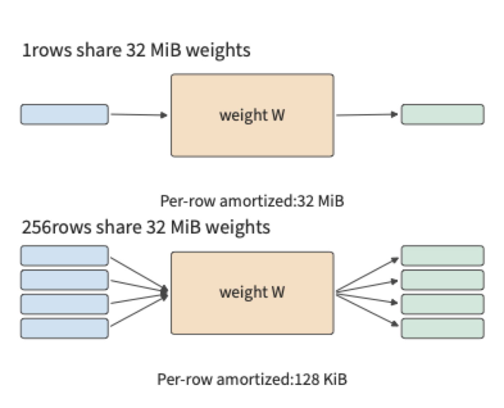
When the row count grows to 256 times its original value, the number of operations also grows 256-fold, but the access volume increases by only about one-eighth. Weight reuse causes the computational complexity to grow faster than the access volume, so the arithmetic intensity rises accordingly.2
Dividing both numerator and denominator of the arithmetic intensity by \(M\) lets us further work out the limit of reuse:
As \(M\) grows, the weight term \(2KN/M\) amortized per row keeps shrinking, while the input-output term stays fixed. For this example, \(I(M)\) eventually approaches 2,048 FLOPs/byte. So the benefit of continuing to increase the batch diminishes: although the weight reads amortized per row keep decreasing, the input and output for the newly added tokens still need to be read and written.
The calculation above assumes the weights are read only once; achieving this on hardware requires keeping the operands and intermediate results resident during use.
4.1.2 Composition and Division of Labor in an Accelerator¶
The host is typically the CPU side that runs the framework, prepares inputs, and issues tasks, while the accelerator is responsible for executing the model's computation; in the host–device programming interface, the accelerator side is usually called the device. For a GPU with dedicated GPU memory, host memory and GPU memory are two separate storage locations. Before running a projection, the inputs and weights are first placed somewhere the accelerator can access; the CPU then submits a command specifying the operator, data addresses, and execution parameters. Once the data is already resident, subsequent invocations can repeatedly reference the same address.
Figure 4-2 shows how the parts inside an accelerator collaborate to perform a matrix multiplication. Off-chip memory holds the larger inputs and weights; the shared cache is storage that multiple groups of compute units access together and that automatically retains recently used data; the local buffer is storage allocated to the current compute group for staging inputs; the matrix unit repeatedly updates partial sums; the accumulator storage retains the partial sums until the current block's computation finishes. The vector and general-purpose compute units handle result transformation, address computation, and control flow.
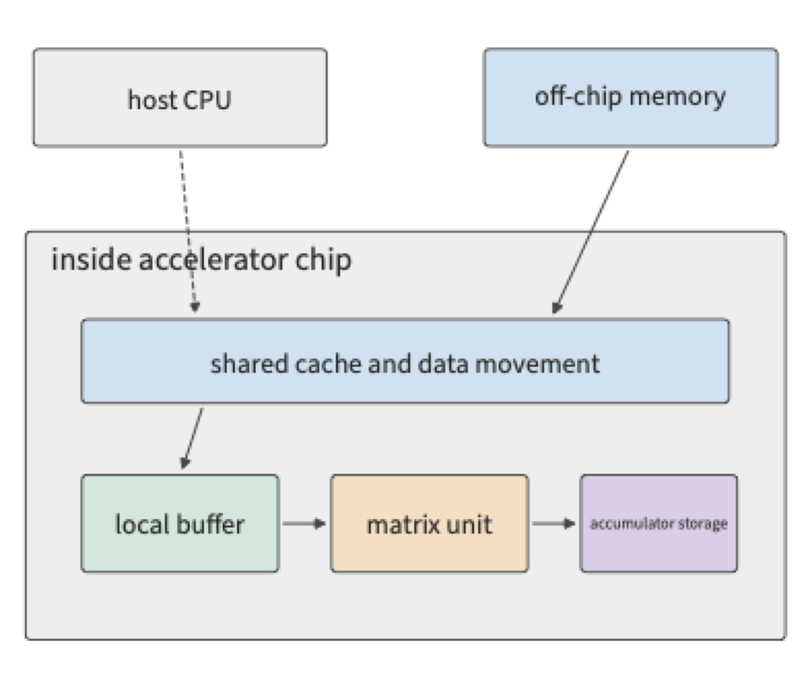
To compute one output block, multiple blocks of input and weights must be read in sequentially along the K dimension. After each multiply-add, the partial sum stays in accumulator storage, and the next block continues updating it. If every update were written back off-chip, the intermediate result would have to be repeatedly written out and read back in; keeping the partial sum on-chip leaves only a single final write-back. The more times data is reused, the more valuable it is to keep on-chip.
NVIDIA organizes a group of cooperatively executing threads, general-purpose compute units, matrix units, and local storage into a Streaming Multiprocessor (SM), within which the matrix multiply-add unit is called a Tensor Core. The software-managed buffer within an SM, used cooperatively by threads, is called shared memory. A thread is the unit of work in a program that executes instructions independently; a function submitted to run on an accelerator at once is called a kernel, and a kernel can be executed cooperatively by many threads. In Ascend's DaVinci architecture, Scalar, Vector, Cube, and MTE refer respectively to the control unit, vector compute unit, matrix compute unit, and data movement unit. Apple's Metal is the programming interface for submitting GPU work, organizing threads that can share local storage and synchronize into thread groups. Although the names differ, these components all address a few common problems: how operands reach the execution unit, how results are kept, and when the next piece of work can begin.3
Following the arrows in Figure 4-2, we can distinguish two kinds of waiting. One is data not yet having arrived — for example, an input block still in transit; the other is the previous computation not yet having finished — for example, softmax waiting for the query-key dot product (QK) to complete. Increasing bandwidth shortens the first kind of waiting; changing the tiling or execution order changes the second kind. Later sections will expand on each of these mechanisms in turn.
How much resource is allocated to each of these components is not decided once and for all. Models and chips influence each other across generation after generation of design. The capabilities of existing accelerators influence a model's state size, matrix shapes, and communication method; software raises execution efficiency through compression, fusion, and parallelism; when some workload occupies a large enough share for long enough, chip designers begin to consider adding dedicated capability for it. Once a new generation of chips comes into use, the operating cost of different models changes again as a result. Design and manufacturing both take time, so hardware responds to demands that have already been observed and are expected to persist. Section 4.6 will expand each link in Figure 4-3 in detail, following the generational changes of the three architectures.
This feedback loop already has publicly documented examples. The DeepSeek V3 report, addressing execution bottlenecks on H800, proposed hardware requirements including communication offloading, consistent operations across interconnects, low-precision accumulation, and quantization support; among these, communication offloading arose because some SMs were occupied by communication.36
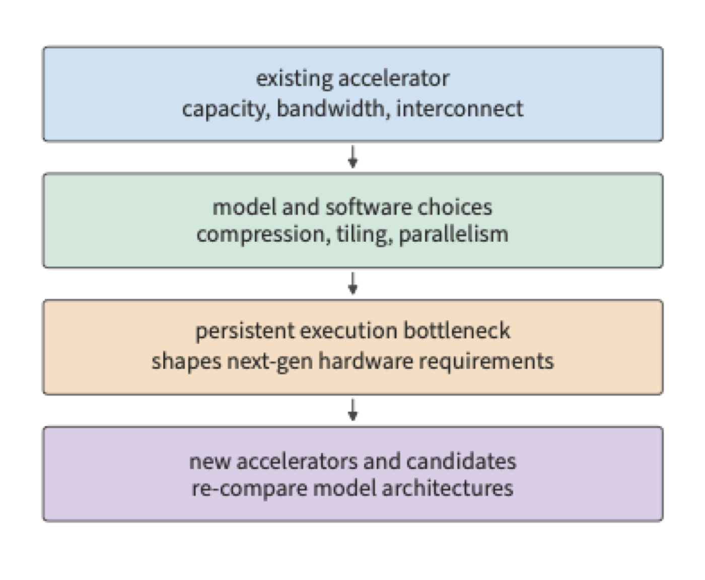
4.1.3 Constraints of Chip Area, Power, and Packaging¶
Compute units, memory, and interfaces all occupy chip area and all consume power. The more resource allocated to one part, the less budget remains for the others. So to evaluate a local improvement, we must look at how much time the whole task saves.
Let's generalize the opening example: let \(f\) denote the fraction of time in a serial task that can be accelerated, and \(s\) its speedup factor; by Amdahl's law from Section 1.2.1, the overall speedup is:
Continuing to raise the matrix speed to four times the original, the total time drops to \(60/4+40=55\) μs. The first doubling saved 30 μs; the second saves only 15 μs. Even if the matrix computation time approaches zero, the rest of the work still requires 40 μs. The overall speedup ceiling is 2.5x. As the remaining work takes up an ever-larger share of the new total time, where resources should be invested shifts accordingly.
The area allocation of early TPUs reflects the actual trade-off between compute and storage. TPU is Google's tensor processor. The first-generation TPU v1 had a \(256\times256\) array of 8-bit multiply-add units, a 24 MiB Unified Buffer, and 4 MiB of accumulator storage. In the chip area breakdown given in the TPU v1 paper, the data buffer takes up about 37%, the compute units about 30%, and control circuitry about 2%. The buffer occupies even more area than the compute units, because the array needs to reuse inputs, weights, and partial sums repeatedly. If every access had to go off-chip, the multiply-adders would spend long stretches waiting for data.4
Suppose a designer shrinks the buffer capacity in order to add more multiply-adders. An input block that used to stay resident in the buffer is now evicted earlier and has to be reloaded on its next use; the extra time from repeated reads can offset the benefit gained from the additional multiply-adders. Conversely, allocating an oversized buffer for data that is rarely reused also wastes area that could have gone to compute. When comparing design options, we need to compute the total time for the same task before and after the change, weighing the effect of faster computation together with the effect of increased repeated reads.
Consider: keep increasing matrix compute, or accelerate the rest of the work? In the 60 μs plus 40 μs task above, taking the original matrix operation speed as the baseline, which change saves more time: raising the speedup from two times to four times, or reducing the rest of the work from 40 μs to 25 μs? If the two changes have different area costs, how should we choose?
Beyond area, power is another budget; the larger the chip and the more cards involved, the more readily power becomes the decisive constraint. Below, four derivations turn power into a computable quantity: why moving data consumes power, how much energy each level of storage consumes per byte moved, how large a chip can be made and how much memory it can connect to, and how a power ceiling lowers the frequency at which a chip actually runs.
Why moving data consumes power. The energy cost of moving data comes from charging and discharging wires. The power consumption of digital circuits splits into a static part and a dynamic part: static power is leakage unrelated to switching, and dynamic power arises from signals toggling between 0 and 1. According to He Tingbo's LogicFolding paper, dynamic power accounts for about 90% in typical smartphone workloads.50 A signal line together with the gate driving it can be viewed as a capacitor \(C\); charging it from 0 to voltage \(V\) requires the power supply to provide energy \(CV^2\). Let \(\alpha\) be the fraction of signals that toggle in each clock cycle and \(f\) the clock frequency (here \(f\) denotes frequency, not the fraction used earlier in Amdahl's law); the dynamic power is
At advanced process nodes, the dominant part of \(C\) is not the transistor gate but the wiring: a metal wire's capacitance is distributed along its length, so the farther a signal travels, the more distributed capacitance it must charge and discharge. The top half of Figure 4-4 illustrates this mechanism: the same gate drives a horizontal wire hundreds of micrometers long, charging distributed capacitance along the whole path; after folding the circuit into upper and lower layers, that horizontal path becomes a vertical connection just a few micrometers long. The paper reports that folding shortens typical core wire lengths by 20%, shortens some critical paths by 70%, and reduces the clock buffers of one processing module from 43,600 to 19,000.
Two examples from the paper can be worked out directly with this formula. The first is a same-performance comparison for an NPU: both delivering 29 TOPS (29 trillion operations per second), folding lowered the voltage from 0.85 V to 0.55 V. Looking only at the voltage term,
Looking only at the frequency term, the frequency dropped by 63%, so \(f\) becomes 0.37 of its original value. Multiplying the voltage term and the frequency term gives \(0.42\times0.37\approx0.16\), far below the paper's reported total power ratio of 0.34 (a 66% reduction). The gap comes from parallelism: the previous-generation NPU was one large core plus two small cores, while the folded version is four large cores (paper §V), relying on more parallel cores at lower frequency to deliver the same 29 TOPS. With more cores, the switched capacitance \(\alpha C\) per cycle increases, offsetting some of the \(C\) reduction from shorter wires. Voltage, frequency, and parallelism together yield 0.34, with the voltage term contributing the most — which is why the paper concludes that the voltage reduction contributes more than the wire shortening.
The second example is a DSP (digital signal processor): the first generation of folding lowered power to 0.75 of the original and lowered the projected area (the area the chip occupies in the plane) to 0.60 of the original, so the power per unit area, i.e., power density, becomes
25% higher than before, consistent with the 24% reported in the paper. Heat must be dissipated over the chip's area, so a drop in total power does not necessarily reduce the thermal-dissipation burden. The bottom half of Figure 4-4 lays out the numbers from both examples side by side.
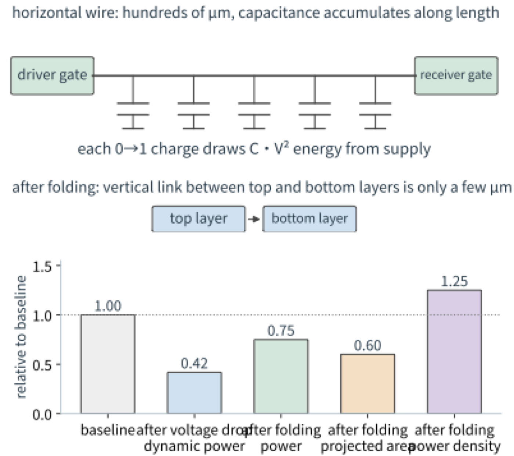
Reversal condition (the critical condition that flips the conclusion): power density fails to rise only if the area ratio is no smaller than the power ratio; in this example the area ratio 0.60 is smaller than the power ratio 0.75, so power density rises.
The energy hierarchy: how much energy it takes to move one byte. Energy cost depends on the capacitance that must be charged and discharged, and that capacitance grows with distance, so the same byte fetched from storage levels at different distances costs vastly different amounts of energy. The table below lists the energy per byte for various storage levels and links: SRAM (static random-access memory) is built on-chip; HBM and LPDDR (low-power DRAM) are both off-chip DRAM (dynamic random-access memory); NVLink-C2C is the chip-to-chip link connecting the CPU and GPU in the Grace Hopper superchip. The unit pJ is picojoule (\(10^{-12}\) J). The figures come from four sources; the table also lists each one's process node and year.51
| Level | Source figure | Energy per byte | Process and year |
|---|---|---|---|
| KB-scale local SRAM | 5 pJ per 32-bit word | 1.25 pJ | 45 nm, Horowitz ISSCC 2014, cited in Dally Hot Chips 2023 |
| MB-scale on-chip SRAM | 50 pJ per 32-bit word | 12.5 pJ | Dally Hot Chips 2023, p. 52, process unspecified |
| NVLink-C2C link | 1.3 pJ/bit | 10.4 pJ | Grace Hopper superchip, NVIDIA technical blog, November 2022 |
| HBM2 | 3.97 pJ/bit | 31.76 pJ | 28 nm DRAM energy model, MICRO 2017 |
| LPDDR DRAM | 640 pJ per 32-bit word | 160 pJ | 45 nm, Horowitz ISSCC 2014 |
| 16-bit floating-point multiply-add (2 FLOPs) | 1.5 pJ per operation | 0.75 pJ/FLOP | 45 nm, Dally Hot Chips 2023 |
Most of HBM2's per-bit energy is consumed inside the DRAM itself, not on the wiring to the GPU. A die is a piece of silicon cut from a wafer. According to the breakdown in the MICRO 2017 paper, the data path inside the DRAM die from the memory array to the base die (the bottom-most die in the HBM stack) accounts for 2.24 pJ/bit, row activation (opening a row in the memory array) accounts for 1.21 pJ/bit, and the I/O that carries data through the interposer (a piece of silicon carrying interconnects between chips) to the GPU accounts for only 0.3 pJ/bit. These three terms sum to 3.75 pJ/bit; including overhead such as ECC (error-correcting code) brings it to 3.92 pJ/bit; the paper's body text gives the total as the 3.97 pJ/bit shown in the table. NVLink-C2C's 1.3 pJ/bit accounts only for the link itself; data fetched over it must first be read from memory on the other side.
Let's apply this table to the generation task in Section 4.8.3: Qwen3-8B, BF16, single request, 8K context. One decode step reads 15.137 GB of weights and 1.208 GB of KV, for a total of 16.345 GB, with a matrix-operation volume of 19.97 GFLOPs. Using the HBM row and the multiply-add row from the table,52
for a total of 0.534 J, of which weight reads account for 90%: nearly all the energy in a single-request decode step is spent on data movement. The HBM row is drawn from the 28 nm HBM2 energy model, while the compute row is drawn from the multiply-add energy of a 45 nm logic process — the two rows use different process nodes, so this tally gives only an order-of-magnitude comparison between the two categories of energy, movement and computation. The time for this step, meanwhile, is bandwidth-limited: reading these 16.345 GB at 3.35 TB/s takes 4.9 ms, so spreading 0.534 J over this period gives only about 110 W. The bottom half of Figure 4-5 assumes the same 16.345 GB comes entirely from a single level: only 0.020 J for KB-scale SRAM, 0.204 J for MB-scale SRAM, 0.170 J for the NVLink-C2C link, 0.519 J for HBM, and 2.62 J for LPDDR.
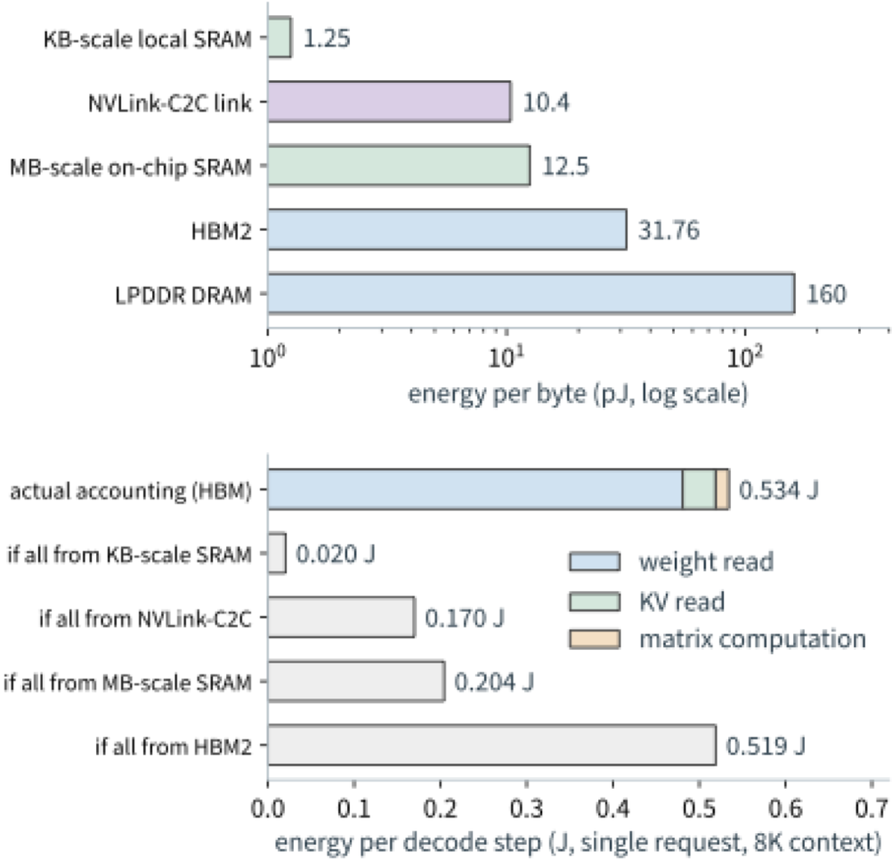
Bandwidth only determines how fast one step runs, not how much energy it costs: doubling HBM bandwidth halves the time for this step, but 0.534 J stays unchanged. There are only two ways to lower energy: fetch the bytes from a closer level, or make the same bytes serve more tokens. At batch size \(B\), weights read once serve \(B\) tokens, so the energy per token is \(0.481/B+0.038+0.015\) J; at \(B=32\) this is about 0.068 J, one-eighth that of a single request. So data reuse is first and foremost an energy problem, and only secondarily a bandwidth problem. The turning point derived by time in Section 4.8.1 is determined by the ratio of bandwidth to compute throughput; the turning point here is determined by the ratio of energy-per-byte to energy-per-FLOP, and the two are not the same.
Reversal condition: \(0.481/B<0.015\), meaning that only once batch size exceeds 32 does the weight-movement energy per token fall below the compute energy.
Reticle and packaging: how large a chip can be, and how much memory it can attach. A lithography machine's single exposure can only cover the pattern area of one reticle (the mask used for exposure); this area is called the reticle limit, and a single die cannot exceed it. H100's die is 814 mm², A100's is 826 mm², both close to this limit; the Blackwell datacenter GPU has two dies, each built to the reticle limit, joined into a single chip by a 10 TB/s NV-HBI link.53 Once a chip is split into two dies, which side holds which computation determines how many accesses must cross this link — Section 4.5.1 will compute this explicitly.
HBM stacks multiple layers of DRAM die on top of one base die, connecting the layers with TSVs (through-silicon vias, vertical wires passing through the silicon), and the whole stack connects to the GPU via wiring on the interposer. Each stack has 1,024 data pins; at pin rate \(r\), the bandwidth and capacity per stack are
Take HBM3E as an example: Micron's eight-layer stack holds 24 GB, and its twelve-layer stack holds 36 GB; SK hynix's stated pin rate of 9.6 Gbit/s, substituted into the formula above, gives \(1024\times9.6/8\approx1229\) GB/s, consistent with the 1.23 TB/s given on its product page. Figure 4-6 draws this kind of packaging: the die sits in the center, HBM stacks line the edges of the die, and the interposer carries the connections between them. Using the same formula, we can work backward to the HBM configuration of three generations of GPUs:
| GPU | Capacity | Bandwidth | Stack count | Capacity per stack | Bandwidth per stack | Pin rate |
|---|---|---|---|---|---|---|
| H100 SXM5 | 80 GB | 3,350 GB/s | 5, per white paper | 16 GB | 670 GB/s | 5.24 Gbit/s, white paper gives 2619 MHz DDR (double data rate, transferring twice per clock cycle) |
| H200 SXM | 141 GB | 4,800 GB/s | 6 stacks totaling 144 GB, product enables 141 GB | 24 GB | 800 GB/s | 6.25 Gbit/s, derived |
| B200 (HGX) | 180 GB | 8,000 GB/s | 8 stacks totaling 192 GB, product enables 180 GB | 24 GB | 1,000 GB/s | 7.81 Gbit/s, derived |
The growth across these generations in the table can each be broken down into stack count, capacity per stack, and pin rate. H100's 5 stacks form a 5,120-bit interface; 5,120 bits times 5.24 Gbit/s divided by 8 gives about 3,350 GB/s. From H100 to H200, capacity grows 76%, coming from each stack going from 16 GB to 24 GB and stack count going from 5 to 6; bandwidth grows 43%, coming from the extra stack plus the pin rate rising from 5.24 Gbit/s to 6.25 Gbit/s. From H200 to B200, two more stacks are added: both H100 and H200 have only a single die, attaching 5 and 6 stacks respectively; B200's 8 stacks line the outer edges of its two reticle-limit dies (Figure 4-6). The stack count is derived from the Blackwell technical brief's configuration of 192 GB and 7.7 TB/s, assuming 24 GB per stack; the rest of this book uses the HGX B200 platform's spec of 180 GB and 8 TB/s per GPU.
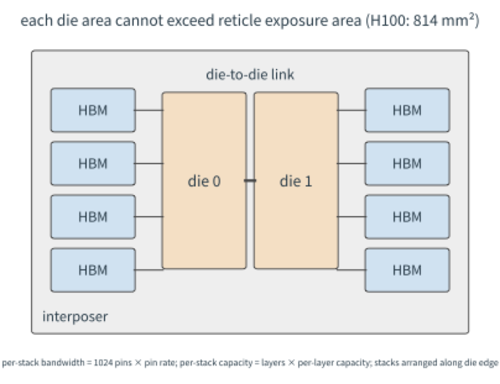
Reversal condition: when the number of stacks required (target capacity divided by capacity per stack) exceeds the number of stacks a single die can attach, one must either increase the layer count per stack or add another die; switching to twelve-layer 36 GB stacks, six stacks alone would reach 216 GB, with no need to add more stacks.
Power ceiling: why peak compute cannot be sustained. Thermal design power (TDP) is the maximum sustained power a module is allowed: 700 W for H100 SXM, 1,000 W for B200.54 This power budget is shared between memory and compute. Take H100 as an example: using the per-byte energy from the HBM2 row in the table above, the power at full HBM bandwidth is \(3.35\ \mathrm{TB/s}\times31.76\ \mathrm{pJ/byte}\approx106\) W; after subtracting this, 594 W remains for compute; dividing by the BF16 dense peak of 989.4 TFLOP/s gives the energy budget per FLOP at peak rate:
A budget of 0.60 pJ/FLOP can only be met through matrix instructions and process advances — the 45 nm reference figures show why. A single scalar half-precision multiply-add instruction (HFMA), doing 2 FLOPs, costs 1.5 pJ, i.e., 0.75 pJ/FLOP, already exceeding the budget on its own; fetch, decode, and operand-fetch add roughly another 30 pJ of overhead, 20 times the energy of the operation itself. A single HMMA matrix multiply-add instruction costs 110 pJ but completes far more than 2 FLOPs, so the same instruction overhead, amortized, accounts for only 22%.51 H100 uses the TSMC 4N process; from 45 nm to 4N, the capacitance and voltage per toggle drop generation after generation.
Let the actual energy per FLOP be \(e\). When \(e\le b\), peak frequency can be sustained; when \(e>b\), the power controller lowers the frequency, and how much depends on \(P\propto fV^2\): if voltage stays fixed, power falls linearly with frequency, and the sustained frequency is \(b/e\) of peak; if voltage drops together with frequency, \(P\propto f^3\), and the sustained frequency is \((b/e)^{1/3}\) of peak. Figure 4-7 plots these two curves: when \(e\) is 1.5 times the budget, the first curve drops to 0.67 while the second only drops to 0.87. Sustained compute throughput falls in proportion to frequency, so time estimates based on peak compute throughput come out shorter than the actual time. Peak compute throughput is a hardware's physical limit, but it isn't achievable under all conditions: once the power ceiling is hit, the limit itself shifts downward together with the sustained frequency, and at that point utilization should be measured against the sustained compute throughput as the denominator.
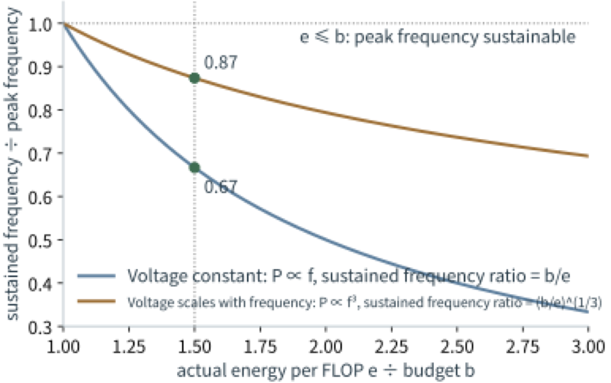
Reversal condition: peak frequency can be sustained when the energy per FLOP is below \((\mathrm{TDP}-P_{\mathrm{mem}})/F_{\mathrm{peak}}\), where \(P_{\mathrm{mem}}\) is memory power and \(F_{\mathrm{peak}}\) is peak compute throughput; in this example the threshold is 0.60 pJ/FLOP. With each process generation, energy per FLOP falls; TDP also rises generation after generation; together these two determine when this condition is satisfied.
4.2 Compute Units¶
Section 4.1 expressed matrix unit performance in terms of a computation rate. This section explains where that rate comes from: how large a matrix a single instruction handles, why small matrices struggle to fully utilize the compute units, and what vector and control operations a matrix result must still pass through.
4.2.1 Why Matrix Units Suit Neural Networks¶
Large matrices must be broken into many small blocks for computation, and matrix units are exactly the hardware that executes these small blocks. The matrix instruction shapes they support are limited, so software must organize a large task into corresponding small steps; multiple compute units on one accelerator card can process different blocks simultaneously.
When computing an \(m\times n\) output block, the same input row participates in the computation of \(n\) output elements, and the same weight column participates in the computation of \(m\) output elements. A matrix unit lets multiple multiply-accumulate units share these operands: data passes between adjacent compute units, and partial sums stay local and get updated in place. A single instruction describes an entire block of work, so the control cost is also amortized across a large amount of computation. Chapter 5 will further explain how software organizes block sizes and traversal order so that these small steps keep obtaining the data they need.
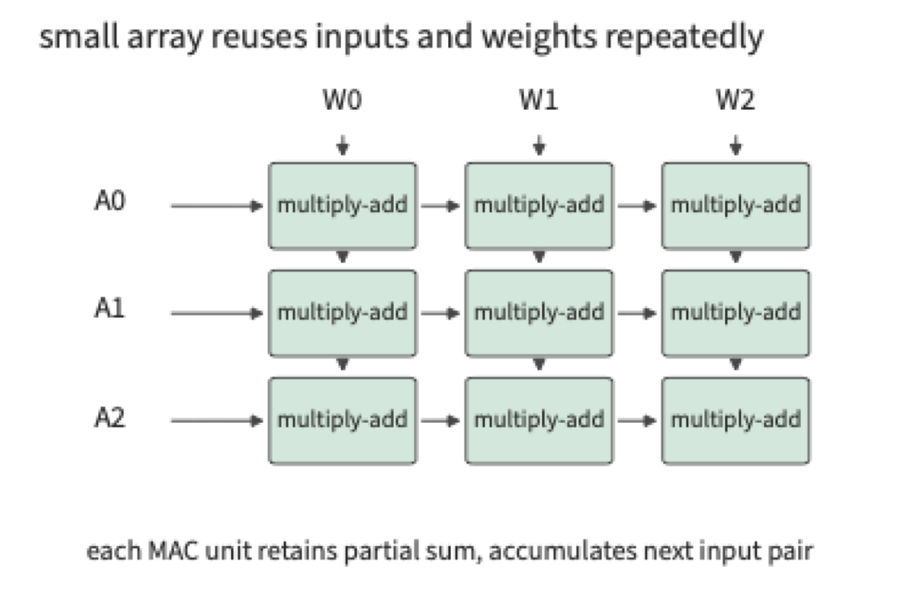
Take a \(16\times16\times16\) matrix operation as an example: the two input blocks each have 256 elements, and completing the operation performs \(2\times16^3=8192\) floating-point operations. Each input element participates in 16 multiplications within the block. Compared with fetching the full set of operands separately for each output, this approach reduces redundant data movement and instruction overhead.
Matrix instructions typically execute in fixed-size blocks. Suppose a given implementation's minimum compute block is \(m_t\times n_t\times k_t\); matrix dimensions smaller than a full block are padded with zeros. The fraction of effective operations relative to actual executed operations is
If the minimum along the row direction is 16 and the real matrix has only one row, with all other dimensions aligned, then only one of the 16 rows contains valid input. Doubling the number of matrix units speeds up both the effective computation and the zero-padded computation simultaneously; switching to a matrix-vector multiplication (GEMV) implementation suited to a single row can reduce the wasted computation caused by padding. Section 4.8 examines empirically how libraries choose an implementation.
Expert models make the row-count problem more pronounced. Suppose 64 tokens each select eight experts, giving 512 dispatches in total, with each expert's matrix having the same dimensions. If dispatches happen to cover 256 experts uniformly, each expert processes the feature vectors of only two tokens; if all tokens select the same eight experts, each expert processes the feature vectors of 64 tokens. In both cases, the 64 original tokens produce 512 expert dispatches, contributing 512 effective rows in total across the experts' input matrices.
Continue using the implementation that pads to 16 along the row direction. The first dispatch pattern executes \(256\times16=4096\) rows, of which 512 are effective; the second executes \(8\times64=512\) rows, all effective. The two dispatch patterns have the same amount of effective computation, but after padding, the first pattern's execution volume is eight times that of the second. Which experts a batch of tokens selects determines not only which weights must be read but also how many rows each expert processes, thereby affecting matrix unit utilization.
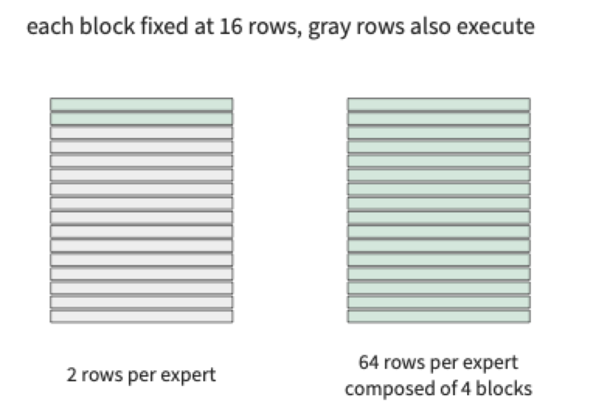
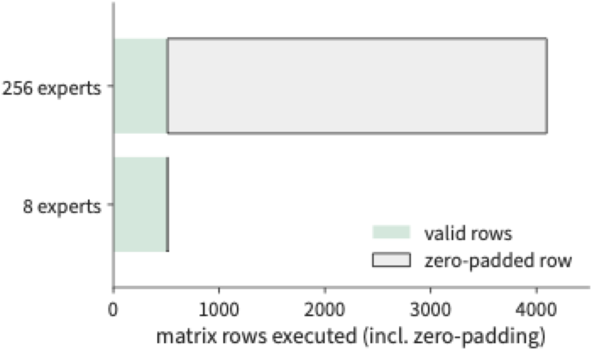
The light gray portions in Figures 4-9 and 4-10 represent computation from zero-padding; adding more multiply-accumulate units also speeds up this wasted computation. Reducing the light gray portion requires changing the number of input rows per expert or choosing a smaller compute block.
This explains why libraries prepare multiple kernels for different shapes: large matrices exploit array reuse, small matrices need a more suitable execution granularity, and multiple small tasks can also be grouped to reduce scheduling gaps. Tensor Core and Ascend's Cube unit are dedicated to executing regular matrix operations, while general-purpose execution units retain the ability to handle other shapes; the two work together to handle the mix of matrix sizes in real workloads.5
4.2.2 Vector operations and control between matrix computations¶
Beyond matrix multiplication, a Transformer layer also includes normalization, positional encoding, and activation functions; expert models additionally need routing. These steps include elementwise operations as well as dependencies among multiple elements.
Take Softmax over a row of \(n\) scores as an example. For numerical stability, first find the maximum, then compute the shifted exponentials, and finally sum and normalize:
When \(n=128\), 128 exponential values must be computed, and 128 results must be normalized; finding the maximum and the sum each requires combining 128 inputs. Elementwise operations can be distributed across multiple compute units for parallel execution; an operation that combines multiple elements into fewer results is called a reduction, for example summation or finding the maximum. A reduction requires progressively merging results from each unit. An ideal binary-tree reduction takes \(\log_2 128=7\) rounds, with each round waiting on the previous round's result. Adding more parallel compute units can shorten the processing time of each round, but the rounds still proceed one after another.
Vector units handle this kind of elementwise and reduction work, special function units handle operations like exponentiation, and control logic manages loops, addressing, branching, and synchronization. Together these three determine when a matrix result becomes available for use by subsequent computation. Ascend's naming of Cube, Vector, and Scalar units directly reflects this division of labor; according to the Ascend 950 white paper, one AI subsystem consists of one Cube Core and two Vector Cores, and the vector portion primarily uses single instruction, multiple data (SIMD, meaning one instruction performs the same operation on a group of data), supplemented by single instruction, multiple threads (SIMT, meaning the same instruction is dispatched to a group of threads each with its own execution state).6
Softmax's scores vary with the input and require recomputing exponentials each time; other non-matrix operations use coefficients that vary only with position and can be precomputed and reused repeatedly. RoPE uses fixed sine and cosine coefficients per position, applying to a pair of components
For Qwen3-8B's 32 Q heads and 8 K heads in one layer, each head rotating 128 dimensions, there are \((32+8)\times64=2560\) component pairs. Each pair requires four multiplications and two additions/subtractions, for 15,360 FLOPs per token. All heads use the same coefficients at a given position, so a single table can be shared: storing 64 cosines and 64 sines for each of 1,024 positions requires only \(1024\times128\times2=256\) KiB in BF16.7
Precomputation converts repeated trigonometric evaluations into coefficient lookups; the rotation itself is still executed per token. The pressure thus shifts from special-function computation to table access and vector operations.
4.2.3 How QK, Softmax, and PV Form a Pipeline¶
Attention connects the matrix computation and vector computation of the previous two sections: \(Z=QK^{\mathsf T}\) produces scores, \(P=\operatorname{Softmax}(Z)\) produces probabilities, and \(O=PV\) forms the output. The same block of data must pass through these three steps in sequence; multiple blocks, however, can advance on different resources in an interleaved fashion.
| Work | NVIDIA GPU | Ascend | Apple GPU |
|---|---|---|---|
| Query-key dot product QK, probability-value product PV | Tensor Core; small matrices can use general-purpose compute units | Matrix core Cube (AIC) | Metal GPU matrix operations |
| Exponentiation, reduction, scaling | SM's general-purpose and special-function resources | Vector core Vector (AIV) | GPU threads and corresponding library implementations |
| Intermediate state | Registers, shared memory, accumulator storage | Level-0 buffer (L0) near the compute units, unified buffer, and transfer path | GPU buffers and threadgroup storage |
This division of labor determines which operations can execute concurrently. For example, while one block is being processed for exponentiation, the matrix unit can process another block; but if both need to fetch operands from the same on-chip interface, that interface must still supply the bytes sequentially. Which units can work in parallel and which operations share the same interface together determine the throughput once the pipeline is running steadily. The Apple row in the table refers to the Metal GPU path. The independent Neural Engine accelerator unit and dedicated units within the GPU are covered separately in Section 4.6.3.8
The FlashAttention series reduces memory access to intermediate attention results through tiling; the fourth version further studies how computation should be divided under stronger matrix units. Below, we use an analysis of FlashAttention-4 on a single SM of NVIDIA's Blackwell-architecture B200 to compute the effect of this division of labor on throughput. Taking a rectangular attention block of \(128\times128\) with head dimension 128, QK and PV together amount to about 8.39 MFLOPs, with 16,384 exponentiation results. At a matrix rate of 8,192 FLOPs per cycle per SM and an exponentiation rate of 16 results per cycle, each requires 1,024 cycles. The shared-memory read for the matrix operands is 96 KiB, and at 128 bytes per cycle, this requires 768 cycles.9
When processing multiple blocks continuously, the matrix unit, the shared-memory interface, and the exponentiation unit can form a pipeline; processing each block occupies these three for 1,024, 768, and 1,024 cycles respectively. If new blocks arrive faster than any one of these units can process them, the waiting queue keeps growing. Therefore, once the pipeline is running steadily, the minimum interval between the completion of two adjacent blocks is at least
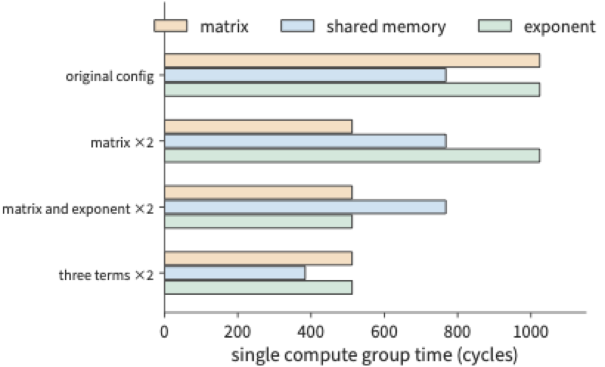
Example 4-1: Why Is Attention Pipeline Throughput Limited by Exponentiation and Shared Memory?
After doubling matrix and exponentiation throughput, how much can pipeline throughput improve? Multiple blocks form a pipeline across independent resources. Compare two configurations: doubling only the matrix throughput; and, on top of that, also doubling the exponentiation throughput. For each configuration, once the pipeline is running steadily, what is the minimum time between the completion of two adjacent blocks?
The slowest unit determines the completion interval between adjacent data blocks. The original configuration gives \(\max(1024,768,1024)=1024\) cycles. Improving only the matrix capability gives \(\max(512,768,1024)=1024\) cycles; further improving the exponentiation capability gives \(\max(512,768,512)=768\) cycles.
After accelerating the matrix unit, the bottleneck shifts to exponentiation and shared memory. The first change lets the matrix unit finish earlier, but the exponentiation throughput remains unchanged, so the lower bound on the completion interval stays the same. The second change removes the exponentiation limit, making shared memory the longest-duration unit, and the corresponding ideal throughput improves to \(1024/768=4/3\) times the original.
After doubling shared-memory bandwidth, to which units does the bottleneck shift? If shared-memory bandwidth is also doubled, the three values become 512, 384, and 512 cycles, and the lower bound drops to 512. The new equilibrium point is jointly determined by the matrix and exponentiation units.
Improving the processing capability of one resource reduces waiting until another resource becomes the bottleneck. For a single block, QK, Softmax, and PV still have a sequential dependency; achieving the completion interval above requires simultaneously holding multiple blocks at different stages of progress. Section 4.4 will compute the buffering and timing this requires together.
Experiment 4-1 · Core: How Does Attention Tiling Change Computation and Shared-Memory Read Volume
Change the rectangular block to \(128\times256\) and \(256\times128\), and compute, for each, the time required for matrix computation, exponentiation, and shared-memory reads. Then raise the matrix computation throughput, the exponentiation throughput, and the shared-memory bandwidth one at a time, state the improvement magnitude adopted, and identify the longest-duration item after each change. Explain how the block shape changes data reuse. Finally, choose a piece of hardware and mark the three categories of work and their storage locations on an execution diagram.
4.2.4 How Low Precision Changes Computation, Data Volume, and Conversion Overhead¶
Matrix shape determines how many multiply-accumulates are performed; numeric format determines what representation each multiply-accumulate uses. Analyzing low precision requires answering three questions in order: how much space the data occupies, what transformations it undergoes during execution, and which transformations the error requirements permit.
Start with representation. If \(n\) weights are each stored in \(b\) bits, with one scale of \(s\) bytes shared per group of \(g\) values, and the total element count divides evenly by the group size, the storage volume is
For the \(4096\times4096\) weight from Section 4.1.1, storing each value in 4 bits with one one-byte scale shared per 32 values: the weight data is 8 MiB, the scales are 0.5 MiB, totaling 8.5 MiB — about 1/3.8 of the 32 MiB required for BF16. If one scale is shared per 16 values instead, the total grows to 9 MiB. Finer grouping makes it easier for a scale to fit the range of values in that group, but it also requires storing more scales.
Next, execution. A compressed value \(q\) together with a scale \(a\) represents an approximate value \(\hat w=aq\). One can either expand it to BF16 first and then perform matrix multiplication, or let a low-precision matrix instruction process \(q\) directly and adjust the result by the scale afterward. Figure 4-12 shows these two implementations side by side: the former spends time expanding the weights up front and keeps a high-precision copy, while the latter folds the scaling and combination into the execution process itself.
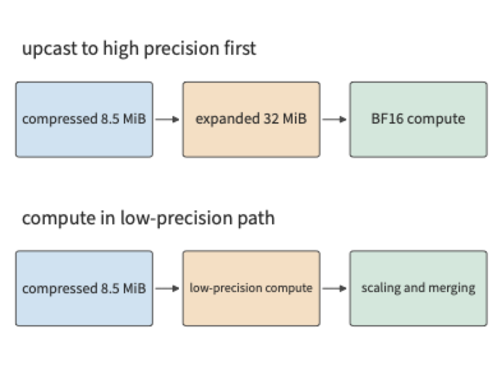
FP4, FP8, and the eight-bit integer format INT8 have already entered kernels in real models: one routed-expert implementation in DeepSeek V4-Flash first converts FP4 weights to FP8 and then performs a GEMM. The weights are stored and read in FP4, reducing the number of transferred bytes; after conversion, the matrix unit computes in FP8 format. If the expanded weights are used multiple times, the cost of a single conversion can be amortized across multiple invocations; if the expansion is redone for every invocation, the conversion time becomes a fixed part of each task. How much time low precision saves depends on the difference between the read time saved and the conversion time added.10
The accompanying experiment measures both error and execution overhead, using a \(2048\times1536\) expert matrix from Qwen3-VL-30B-A3B, comparing two methods: computing directly with INT8 tiling, versus first expanding to BF16 and then performing a single matrix multiplication. The experiment runs on an RTX PRO 6000, with inputs from real expert routing. The L2 norm of a vector is the square root of the sum of squares of its elements; the local relative error is measured by dividing the L2 norm of the output error by the L2 norm of the reference output, with a threshold set at 2%. Per-row activation scaling gives an error of about 2.3%–3.5%; scaling the activations separately every 128 elements along the K dimension reduces the error to about 1.5%–1.9%.11
Finer quantization grouping changes how the dot product is accumulated. For one input row and one weight column, let the activation scale per group be \(a_g\) and the weight column scale be \(b_j\); the dot product can be written as
Since \(a_g\) differs across groups, the computation first sums the integer partial products within each group, then multiplies by the scale, and finally adds the results together. This implementation therefore requires 16 matrix-multiplication calls, with conversion, scaling, and combination completed between calls. When the number of input rows is small, they must also be padded to the kernel's minimum row requirement. The alternative approach expands each group to BF16 first, then performs the entire K-dimension accumulation in a single GEMM.
Using real single-token decode input as an example, the total execution times of the two methods are about 2.81 ms and 2.52 ms respectively — the expand-then-compute method is faster. GPU memory footprint shows the opposite pattern: the peak GPU memory footprint recorded by the memory allocator across subsequent calls is about 11.4 MiB and 35.2 MiB respectively, with the direct-computation method saving roughly two-thirds.12 Finer quantization grouping reduces error, grouped calls increase time, and omitting the high-precision copy reduces GPU memory footprint; numeric format and computation method together determine error, execution time, and GPU memory footprint.
Improving this implementation therefore means fusing the within-group computation, scaling, and accumulation together, reducing both quantization error and kernel launch overhead at the same time.
Experiment 4-2 · Extension: When Does Expanding Quantized Weights Reduce Repeated Execution Cost?
Starting from the grouped dot-product formula above, compare expand-then-compute against direct grouped computation, listing the data each must keep, including weights, scales, expanded weight copies, partial sums, and outputs. Compute the total time for three strategies — expand once at load time, expand on every call, and direct grouped computation — after \(R\) repeated uses. Then use the error and peak memory footprint recorded from experiments with real inputs to explain when it is worth using extra memory to keep the expanded weights, in order to reduce the cost of repeated expansion.
4.3 Memory Hierarchy¶
Section 4.2.4 explained how numeric format changes data size. This section analyzes the data reads and writes of the Q projection, distinguishing three questions: whether this data fits, which level it is read from on reuse, and whether independent accesses alone suffice to sustain the target bandwidth.
4.3.1 GPU Memory and Unified Memory¶
While a model runs, weights, the KV cache, and temporary workspace all occupy memory at the same time. Weight occupancy is relatively fixed, the KV cache grows with the number of requests and context length, and the workspace holds intermediate results during execution. Only after determining these three quantities can one decide whether an accelerator can accept another request.
Qwen3-8B's BF16 weights occupy about 16.4 GB. The model has 36 layers, with 8 KV heads per layer, each head with 128 dimensions; K and V are each stored separately, with two bytes per element. So the KV occupancy per context token is
When each request retains \(S\) positions and \(B\) requests are served simultaneously, the capacity condition is
Solving for \(B\) gives the maximum number of requests at a fixed length:
Taking the RTX 4090's 24 GB of GPU memory as the available capacity and reserving 2 GiB for workspace: after subtracting the weights, about 5.47 GB remains for KV. At \(S=8192\), each request needs 1.125 GiB, or about 1.21 GB; four requests' KV together need about 4.83 GB, which fits; a fifth request brings the total to about 6.04 GB, exceeding the remaining capacity. Doubling the context doubles each request's KV, dropping the maximum request count to two.13
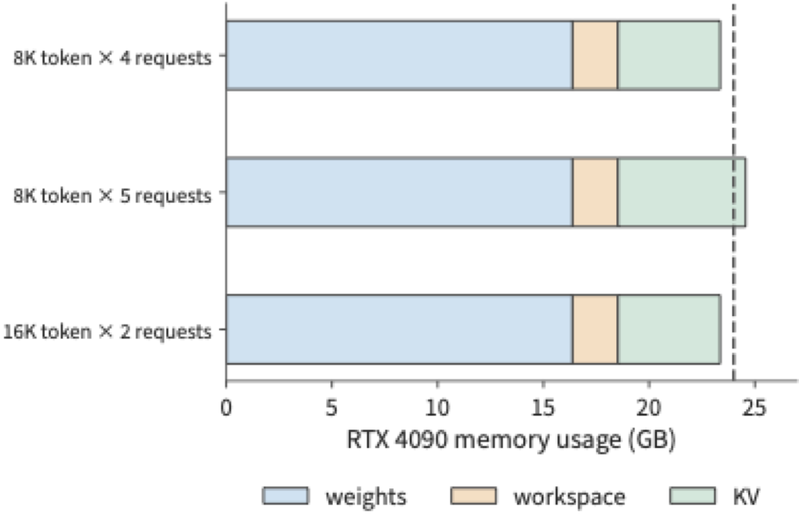
In Figure 4-13, the widths of the weights and workspace stay fixed, and the change occurs in the KV region on the right. A long context widens each KV block, while increased concurrency increases the number of blocks; the two compete for the same remaining space.
The rounding in the maximum-request-count formula reveals a step effect in capacity. Adding a small amount of memory may leave \(B_{\max}\) unchanged; only once the remaining space can hold the full KV of one more request does the maximum request count increase. Compressing the weights enlarges the remaining space in the numerator of the formula, so it too can accommodate more requests. For models with large weights, reducing the fixed footprint noticeably raises concurrency; for long-context tasks, where the KV already accounts for a large share, further compressing the weights yields diminishing returns.
Lowering the KV bit width also frees up capacity. DeepSeek V4.1-Flash from Chapter 2 uses both a global history and an SWA local window. One main-KV record with 512 values in FP4, together with its grouped scale, occupies 288 bytes; one local-window record in FP8, together with its scale, occupies 528 bytes. The main KV is dequantized — that is, restored to the numeric format used for computation via the scale — before participating in the attention multiplication. The storage format compresses the resident state, and the value is restored to the working format at execution time.38
The above accounts only for inference-time state. Training also uses gradients, optimizer state, and activations saved for backpropagation. Following the tensor lifecycle introduced in Chapter 3, one computes these states' occupancy: all tensors still needing to be retained at a given moment together determine the peak memory footprint, and intermediate results already released free up space for subsequent work. Capacity planning therefore depends both on the size of each tensor and on execution order.
GPU memory capacity is ultimately provided by memory devices and interfaces. HBM provides bandwidth through stacked memory dies and a wide interface; graphics double data rate memory (GDDR) typically provides GPU memory through multiple memory chips paired with a high-speed interface. Both are memory-device and interface technologies, whereas unified memory is an organizational scheme in which a processor shares memory. Apple's CPU and GPU access shared physical memory, so the two can use the same buffer one after another, reducing independent copies; correspondingly, the CPU, the GPU, and other applications all draw on this shared capacity and bandwidth.8 Section 4.5 analyzes the effect of this organization on transfer time along the host-to-accelerator path.
Reflection: Can KV Compression Fit In One More Request? If each request's KV requirement drops 10% from 1.21 GB, can the RTX 4090 accommodate a fifth request? First find the total requirement for five requests, then compare it against the remaining space.
4.3.2 Caches, On-Chip Buffers, and Registers¶
When computing a block of output, the same input value often participates in the computation of neighboring outputs, and partial sums that are not yet complete must continue to accumulate. If every multiply-add went back off-chip to fetch operands and write back results, it would generate enormous round trips. Keeping frequently used data near the compute unit—like placing the materials you're currently using on the workbench within reach—reduces this movement, but nearby space is limited.
Registers hold the values that a thread and its instructions are currently using; caches automatically retain recently accessed data; software-managed buffers are explicitly scheduled by the program for loading and release. All three retain data for repeated use, but they differ in capacity, access method, and who manages them. On-chip storage also consumes chip area, so its capacity is typically much smaller than off-chip memory. Below we trace two input blocks and one partial-sum block to compute the space required.
Consider a multiply-add block with \(m=n=128,k=64\). The BF16 input and weight blocks are each 16 KiB, totaling 32 KiB; the FP32 output accumulator is \(128\times128\times4=64\) KiB. A V100 SM can configure at most 96 KB (i.e., 96 KiB) as shared memory per SM; if both operands and the accumulator are placed there, this uses it exactly to capacity.40 Preparing the next pair of operands simultaneously would then require \(2\times32+64=128\) KiB.
If the accumulator uses separate storage, the same 96 KiB can hold three paired sets of input and weight blocks. The total capacity of local buffering has not increased, but the division of storage duties changes how many input blocks can be prepared ahead of time. Section 4.6.1 will use Blackwell's dedicated accumulator storage to illustrate this division of labor.
The earlier example kept a compute block's partial sums on-chip, eliminating repeated write-backs. The same idea applies to inputs shared by multiple compute blocks. Suppose four output blocks all need to read the same 32 KiB of input; together they issue 128 KiB of logical read requests. L2 is a second-level cache shared among compute units. If the first read leaves the data in L2 and the following three reads hit, then off-chip memory only needs to supply 32 KiB, but L2 still must serve all 128 KiB to the various blocks. If the same compute group processes the four output blocks sequentially and keeps the input in a local buffer, subsequent accesses can be served directly from the local buffer.
Therefore, analyzing the same piece of data requires distinguishing three quantities: the space occupied by the data itself, the number of bytes each compute block requests, and the number of bytes actually transferred at some given interface level. Arithmetic intensity likewise varies with the level of observation. Intensity computed from L2 request volume should be paired with L2 bandwidth; intensity computed from DRAM traffic should be paired with off-chip bandwidth. Section 4.8 will demonstrate this distinction with actual measured counts.
L2 has a second role that follows from where it sits. A GPU's SMs are grouped into Graphics Processing Clusters (GPCs); L2 is split into slices, each responsible for a range of addresses, and every slice connects to every SM through an on-chip crossbar. The RTX PRO 6000 has 188 SMs and 128 MiB of L2. Registers, shared memory and the L1 cache are private to each SM. Since Hopper, several SMs in the same GPC can form a thread block cluster, whose SMs can read and write each other's shared memory directly; this is called distributed shared memory. Apart from that, SMs share no storage: for one SM's result to reach another SM, it must first be written to an L2 slice and then read back by the other side (Figure 4-14). L2 is therefore both the entry point for off-chip data and the only path for data exchange between SMs outside a cluster.
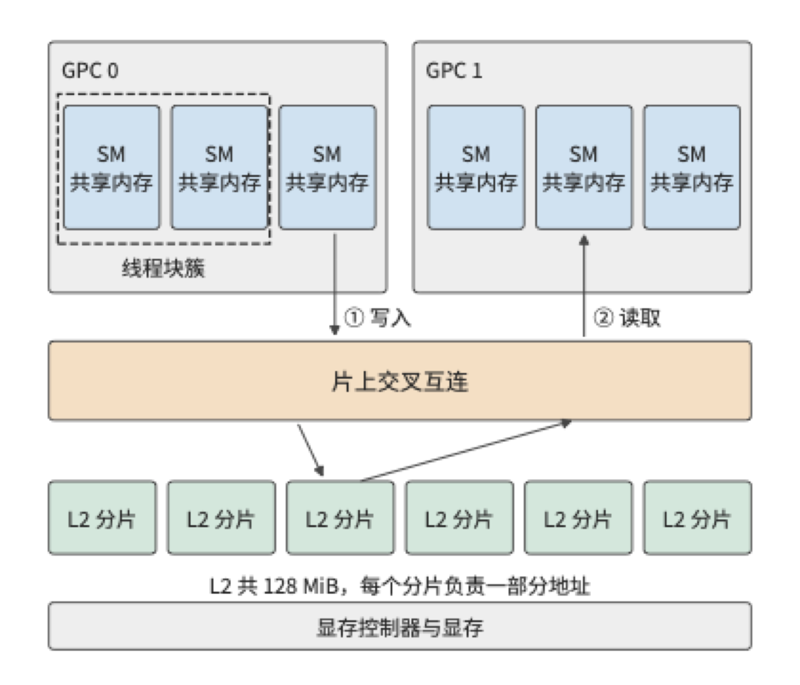
Enlarging the compute block usually increases data reuse, but it also requires a larger buffer. The RTX 5090 and RTX PRO 6000 use the SM120 architecture, where each SM's L1 data cache and shared memory together total 128 KB, of which at most 100 KB can be configured as shared memory, shared among the compute groups resident on that SM: when each compute group needs 32 KiB, three groups can be resident; once each group grows to 64 KiB, only one group can be resident.41 While one group waits for data, another can continue computing. So when the number of concurrently running groups decreases, compute units are more likely to sit idle. Choosing block size requires weighing how much repeated reading each group can avoid against how many mutually independent compute groups can still fit.
On-chip buffer capacity has also grown across generations. The A100's shared memory limit per SM is 164 KB, while the H100's is 228 KB.14 More compute groups resident on-chip can also issue more mutually independent read requests.
4.3.3 What Capacity, Bandwidth, and Latency Each Constrain¶
Capacity is how much data can be held at a given moment; bandwidth is how much data is transferred per unit time; latency is how long a single request takes from issue to completion. Issuing enough independent requests simultaneously lets other accesses proceed while waiting for one access to return.
Model residency and step-by-step execution place different demands on memory. Per the HBM configuration table in Section 4.1.3, the H100 SXM offers 80 GB at 3.35 TB/s, and the H200 SXM offers 141 GB at 4.8 TB/s—capacity and bandwidth do not grow by the same factor. In one 4-bit configuration of Qwen3-235B-A22B, weights and scales total about 123.1 GB; eight requests each retaining 8,192 tokens of KV total about 12.6 GB, plus a 2 GiB workspace, for roughly 137.9 GB in total. The H100's capacity shortfall is nearly 58 GB, while the H200 has about 3.1 GB of margin. Increased capacity first of all lets this data reside simultaneously.15
The weights of all experts are held in memory, while which weights need to be read at each step is determined by the routing result. When eight requests' expert selections are dispersed, per-step access of weights, scales, and KV totals about 75.967 GB; when the same experts are selected concentratedly, this drops to about 24.737 GB. On an H200, simply transferring these bytes takes about 15.8 ms and 5.2 ms respectively; switching to an 8 TB/s HGX B200 brings these down to about 9.5 ms and 3.1 ms respectively. Expert reuse cuts traffic to about one-third, while the accelerator upgrade cuts the time needed to transfer one byte to about six-tenths of the original—two changes acting on different terms of the formula \(T=V/R\).
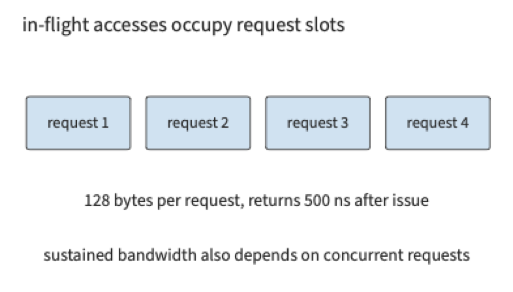
The \(V/R\) calculation above assumes the interface can sustain a given bandwidth continuously. Maintaining that speed requires continuing to issue other requests while one access is waiting to return. Call the basic unit of a single transfer over the memory interface a memory transaction. Suppose the interface can have at most \(N_o\) transactions in flight at once, each transaction returns \(s\) bytes, and average completion latency is \(L\). A transaction occupies a slot from issue until it returns; at most about \(N_o/L\) transactions can complete per second, so
Solving for \(N_o\), sustaining a target throughput requires
This is Little's law: the average number of in-flight requests equals the request completion rate multiplied by the average request latency. Hardware queues determine how many in-flight transactions can be held, while mutually independent accesses in the program determine whether that queue can actually be filled. If the next address depends on the result of the previous read, then even a deep queue cannot be filled; multiple independent compute blocks, on the other hand, can supply reads that don't wait on one another.
Every access in a dependent chain pays the full latency, and this is exactly how L2 hit latency is measured: a single thread reads repeatedly, each address taken from the value just read, with all data resident in L2. On the RTX PRO 6000, one L2 round trip takes about 340–390 clock cycles, or about 120–135 ns at the measured SM clock of 2.88 GHz. That is shorter than a memory access but still a stall of several hundred cycles. The latency also depends on which slices hold the data: the same program measured 354–870 cycles in different processes. Every handoff between SMs is built from several such round trips; see Section 4.4.4.35
Example 4-2: Does a higher-bandwidth GPU speed up KV reads proportionally?
Compare the limits that in-flight transaction count and interface bandwidth place on KV reads. Reading the KV corresponding to 8,192 context tokens for one request totals 1.125 GiB. Take the GPU memory interface as the RTX 4090's 1,008 GB/s, 128 bytes per transaction, and completion latency of 500 ns: the memory benchmarking tool Mess measured the H100's idle GPU memory latency at 363 ns, rising to 699–1,433 ns near saturation bandwidth, so 500 ns falls between these.16 Compute the effective read bandwidth and time for at most 128 and 4,096 in-flight transactions respectively, then compare against the result after switching to an RTX 5090 at 1,792 GB/s.
Derive effective read bandwidth from in-flight bytes and access latency. Sustaining 1,008 GB/s requires \(\lceil1.008\times10^{12}\times500\times10^{-9}/128\rceil=3938\) transactions. With only 128 transactions, the achievable bandwidth is only about 32.8 GB/s, and the read takes at least 36.9 ms; 4,096 transactions are enough to sustain 1,008 GB/s, dropping the time to about 1.20 ms.
When in-flight transactions are insufficient, a higher interface bandwidth yields limited benefit. After switching to the RTX 5090, 4,096 transactions can still only support about \(4096\times128/(500\ \mathrm{ns})=1.05\) TB/s, taking about 1.15 ms. Interface bandwidth increased by about 78%, yet throughput—constrained by the number of in-flight transactions—improved by only about 4%.
How many in-flight transactions are needed to fully use higher bandwidth or to cope with longer latency? Raising the in-flight transaction count to at least 7,000 is needed to sustain 1,792 GB/s; if latency increases to 800 ns, this requirement rises further to 11,200.31
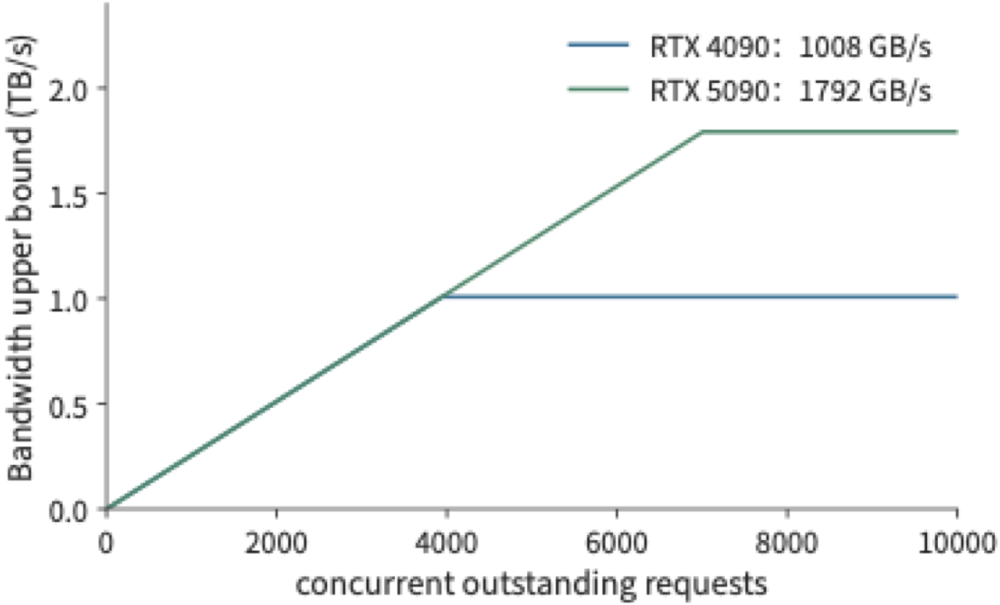
The two curves in Figure 4-16 coincide at low concurrency because the constraint comes from the number of in-flight bytes. Past each curve's respective knee, interface bandwidth becomes the new bottleneck. In real systems, increasing concurrent accesses also lengthens queues, and latency varies with load; Mess uses latency probes together with adjustable background traffic to observe both quantities at once, producing a bandwidth-latency curve.16 This curve places "issuing independent requests simultaneously reduces idle time while waiting" and "too many requests increase queueing time" on the same chart.
When analyzing storage performance, first determine from capacity whether data can reside on-chip, then compute traffic at each interface level based on the reuse pattern, and finally determine—combining concurrency level and latency—whether the interface can sustain continuous transfer.
Experiment 4-3 · Extension: Which decode bottlenecks does increasing memory capacity versus bandwidth respectively address?
Using the storage results for Qwen3-8B and Qwen3-235B-A22B, increase only capacity, then only bandwidth, and separately vary batch size and expert distribution. First find the maximum number of requests that can reside, then compute per-step read time, and finally find the number of in-flight transactions needed to sustain the target bandwidth. Explain which scheme is constrained first by capacity, by transfer time, or by access concurrency.
4.4 Data Movement¶
Sections 4.1–4.3 computed the size and reuse count of data, and explained the concurrency needed to sustain bandwidth. This section further arranges when this data is fetched, when it is used, and when it is released. The core of data movement is ensuring the next block arrives before the compute unit needs it, while retaining the current block until its last use is complete.
4.4.1 Data Layout and Addressing¶
Drawing a small block on a matrix only determines which elements to fetch. These elements need not be adjacent in memory: if the original matrix is stored row-major, after reading one row of the small block, the read must skip over unselected elements to reach the corresponding position in the next row of the original matrix. Mathematical tiling can change only the indices and access range, without necessarily copying out an independent small matrix first. The hardware needs to locate these elements using strides. For a 2D view where each element occupies \(b\) bytes, the row stride is \(s_r\) bytes, and the column stride is \(s_c\) bytes, the element address is
When a matrix is stored contiguously by row, \(s_c=b\), and the row stride is determined by the full row width. When fetching a submatrix, each row of the submatrix occupies only part of a row of the original matrix, but the distance between the starts of adjacent rows still equals the original matrix's row stride. This determines what kind of access the hardware must issue.
For example, take 128 rows of 128 contiguous elements each from a BF16 matrix with row width 4,096. The effective data is \(128\times128\times2=32\) KiB, but each row occupies only 256 bytes, while adjacent row starts differ by 8,192 bytes. The span from the start of the first row to the end of the last row covers \(127\times8192+256=1\,040\,640\) bytes. Reading row by row transfers only each row's effective interval; if adjacent threads access adjacent elements, their requests can also be merged into fewer transactions.
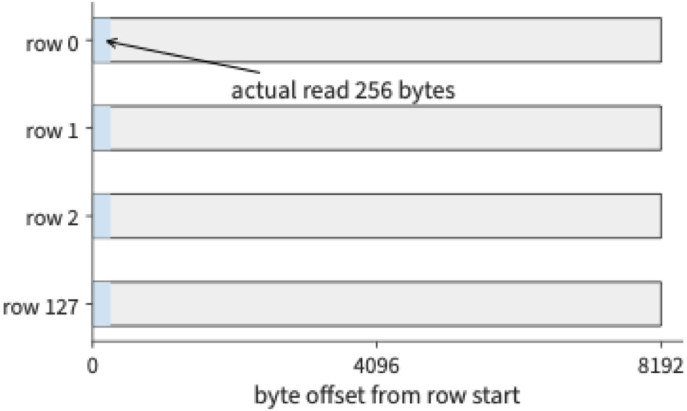
Each row's blue region is only 256 bytes, yet the next row's blue region doesn't begin until 8,192 bytes later. Reading the whole address span would also carry away the gray gaps, whereas reading row by row obtains only the blue portions. This illustrates the role of the row stride: it tells the movement unit where the next segment of effective data begins.
Data layout affects access cost in two ways: stride affects address computation, and address contiguity affects whether multiple accesses can be merged into a single transaction. The same 32 KiB can, depending on arrangement, be fetched with regular contiguous requests, or require issuing a large number of short requests. The bytes per transaction \(s\) from Section 4.3 depends on how these accesses get merged.
Tiling also determines how many times the same address gets requested. For DeepSeek V4-Flash's shared expert, one w1 computation is \([32,4096]\times[4096,2048]\), and the FP8 input is only 128 KiB. The output width is split into 16 blocks of 128 columns each, and every output block must traverse the full input, so the block-level input requests total \(16\times128\) KiB, i.e., 2 MiB. Weights are partitioned by output column, with each block reading its own portion, totaling 8 MiB of weight data.17
The input's underlying size remains 128 KiB; the extra requests come from tiling along the output-column direction. If these output blocks share a cache, repeated requests can be served directly from the on-chip cache; if the same compute group retains the input and continuously computes multiple output blocks, the reuse can instead move into a local buffer. Addressing, tiling, and the memory hierarchy connect here: the tiling scheme determines which read requests get issued, and where the data resides determines which interface level those requests pass through.
Ordinary load instructions compute addresses step by step and issue accesses; a dedicated movement unit instead receives a tensor's shape, strides, and starting point, and repeatedly generates these addresses. This set of parameters describing the movement task is called a descriptor. NVIDIA's Hopper architecture (which the H100 belongs to) provides the Tensor Memory Accelerator (TMA), and Ascend 950 provides the multi-dimensional direct memory access unit (NDDMA); both offer multidimensional tensor movement capability.18 For the submatrix above, the starting point, 128 rows, 256 bytes per row, and an 8,192-byte row stride are sufficient to describe this entire regular movement. With a dedicated unit handling this repetitive address computation, compute threads can go on to do other work.
4.4.2 Asynchronous Movement and Double Buffering¶
After locating and fetching a block of data, the next block must also arrive in time: if the system always waits for the current block to finish computing before starting to read the next, the compute unit will repeatedly stall. Preparing two buffers lets one use the data in the first buffer while loading the next block into the second buffer; when the current block finishes, the two buffers swap roles. This is double buffering: trading extra space for overlap between loading and computing in time.
Suppose there are \(n\) blocks of data total, with each block taking \(t_l\) to load and \(t_c\) to compute. If each block must be fully fetched and computed before the next begins, the total time is \(n(t_l+t_c)\). When loading and computing use independent resources, with double buffering, the first block is loaded then computed, and subsequent blocks proceed at the pace of whichever stage is slower:
For eight blocks of data, each taking 2 μs to load and 1 μs to compute, serial execution needs 24 μs, while pipelining needs \(2+1+7\times2=17\) μs. The 7 μs saved comes from overlap; the bytes transferred and multiply-adds performed remain unchanged. Doubling the compute speed further only reduces the total time to 16.5 μs, because loading can still only supply one block every two microseconds.
The analysis above treats loading as a single complete stage. Next, we break loading into transfer and wait-for-return, and compute how many buffers are needed when multiple requests proceed simultaneously. Here we use "tick" to denote one clock cycle of a B200 SM, and distinguish between issue interval and completion latency: if a read request is issued every 64 ticks, while each block of data isn't usable until 192 ticks after the request is issued, then multiple blocks will be waiting for return simultaneously. Computation cannot begin before the input has arrived. Call the buffer holding one input block an input slot: from when the read request is issued until that block's computation finishes, the slot remains occupied. Adding more slots allows subsequent data reads to be issued earlier, but also consumes more local storage.
Let's derive this concretely using attention's QK computation. Both inputs are \(128\times128\), split along the head dimension into four accumulation blocks of \(k=32\). Each Q/K input block totals 16 KiB, requiring 1,048,576 FLOPs of computation; the four computations successively update the same FP32 result, held in a separate 64 KiB accumulator store. The matrix rate is taken from the FlashAttention-4 paper's figure of 8,192 FLOPs per cycle per SM for the B200; the input transfer rate is taken as 256 bytes/tick, with an additional 128-tick wait after transfer completes before the data is usable.199
So each input block's transfer takes 64 ticks, becomes ready 192 ticks after being issued, and then takes 128 ticks to compute.
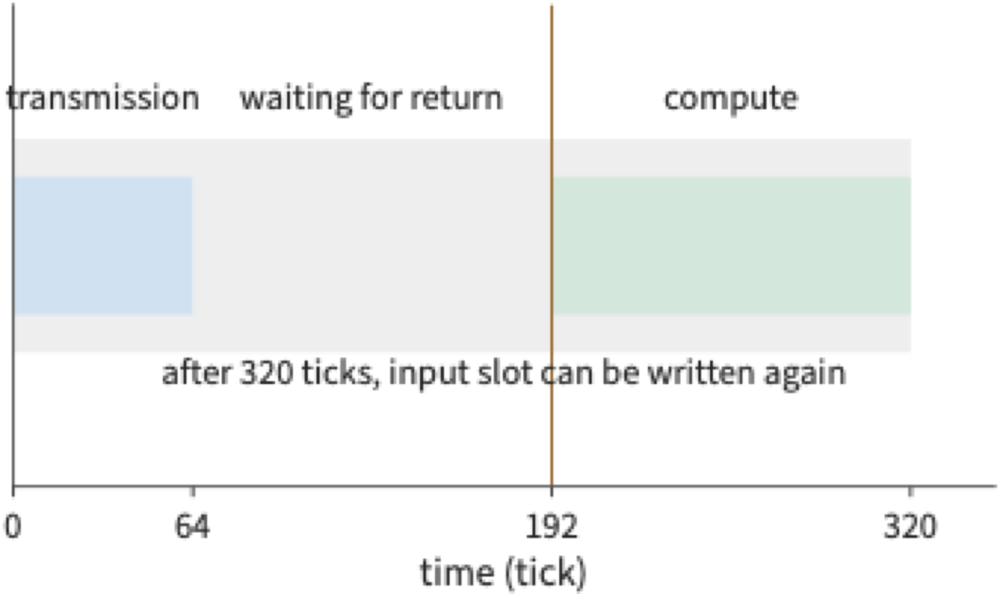
With only one input slot, that slot goes through loading, waiting, and computing, taking \(64+128+128=320\) ticks before it can be reused, so all four blocks finish at 1280 ticks.
Figures 4-18 through 4-20 successively depict execution with one, two, and three slots, keeping the same time scale. Scanning along the green compute intervals to find idle gaps, then looking upward to see when the next input becomes ready, reveals where the waiting originates.
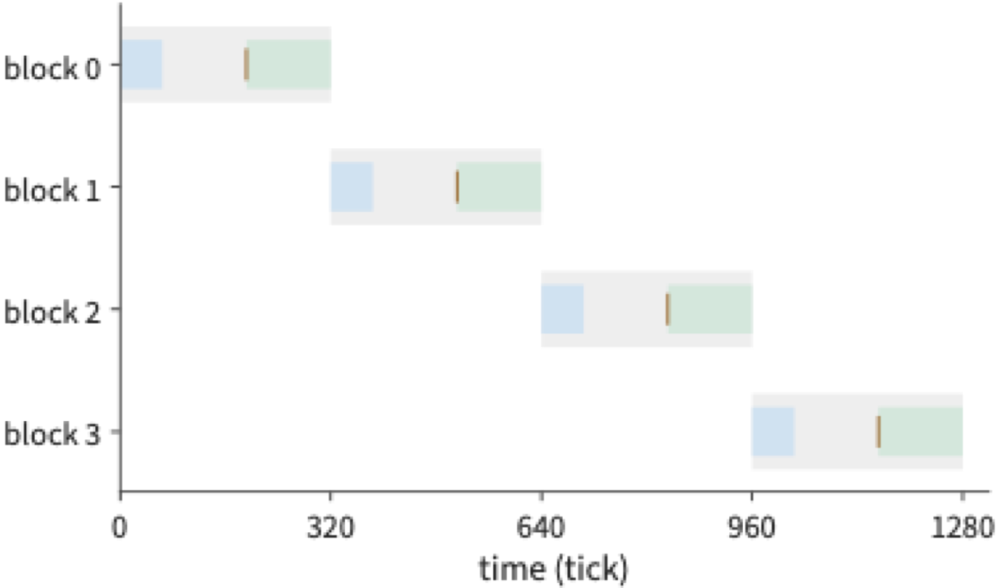
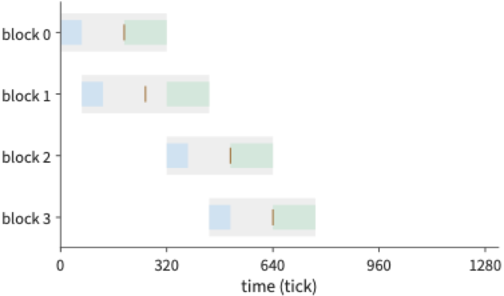
Two slots allow the read requests for the first two blocks to be issued at times 0 and 64. The first block begins computing at 192 and finishes at 320; the freed slot is used for the third block, which becomes ready at 512. The second block already finished computing at 448, leaving a 64-tick idle gap in between. Continuing in the same order, the fourth block finishes at 768. The second slot lets some loading overlap with computation, but the matrix unit still idles between the computation of two blocks.
To compute all four blocks continuously, the earliest possible completion time is the first block's wait time plus four computations, i.e.,
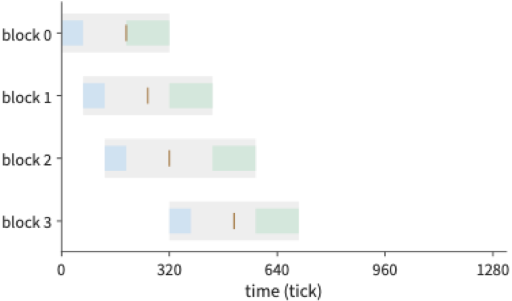
Three slots are already enough to achieve this time. The read requests for the first three blocks are issued at times 0, 64, and 128 respectively, and become ready at 192, 256, and 320 respectively; computation proceeds sequentially starting at 192. The first block releases its slot at 320, immediately issuing the read request for the fourth block, which becomes ready at 512—earlier than the scheduled start time of 576 for its computation. The matrix unit therefore computes continuously from 192 to 704 ticks, with no idle gap in between.34
| Input slots | Input buffer | Completion time | Savings vs. previous |
|---|---|---|---|
| 1 | 16 KiB | 1280 tick | — |
| 2 | 32 KiB | 768 tick | 512 tick |
| 3 | 48 KiB | 704 tick | 64 tick |
| 4 | 64 KiB | 704 tick | 0 |
This example illustrates a method for finding a buffer configuration: first derive the target from the first block's arrival time and the continuous computation time, then check whether each block can arrive on time, and finally find the minimum number of slots that meets the target. Although the fourth slot lets the last block become ready earlier, it doesn't let computation start any earlier; the data fetched ahead of time simply waits longer before use.
Buffer configuration also changes with compute speed. After doubling the matrix rate, each block's computation takes only 64 ticks, and the target for continuous computation becomes \(192+4\times64=448\) tick. With only three slots, the fourth block's read request can be issued at the earliest at 256 ticks, becoming usable only at 448 ticks—too late for the originally scheduled computation start at 384 ticks—giving a completion time of 512 ticks; four slots, however, can issue all requests early enough to reach 448 ticks. Once matrix computation speeds up, the original loading schedule is no longer fast enough to prepare the next block, and the input buffering must be reconfigured.
With asynchronous movement, a compute thread can continue with other work after issuing a load, and wait for a completion event only when it actually needs the data. The movement unit writes data into an empty slot, and a completion event marks the data as ready; the slot is released only after computation finishes. NVIDIA's asynchronous copy, Ascend's MTE/NDDMA, and Metal's task dependency mechanism are all used to arrange this kind of handoff.18
Think: If the extra wait before input becomes usable doubles, are three buffer slots still enough? Keeping the same transfer and compute rates, increase the additional wait time from transfer completion to input readiness from 128 to 256 ticks. Can three slots still achieve gap-free computation? Write out the fourth block's readiness time and its required time separately.
4.4.3 Data Handoff Between Units¶
Input pipelining reduces the time the matrix unit waits for data, but attention also has to hand matrix results to the vector unit, then send probabilities back to the matrix unit. Storing a complete \(128\times128\) FP32 score matrix takes 64 KiB; the matrix unit writes it once and the vector unit reads it once, so 128 KiB of data passes through the same storage interface. If the matrix unit passes its result directly to the vector unit, this intermediate write-back and re-read can be skipped.
When vector computation can start also depends on which complete results it needs. Ordinary row-by-row softmax needs the full set of scores for a row before it can compute the maximum and the normalization denominator. Computing the QK inner-product dimension halfway leaves every score as only a partial sum; grouping by query row, however, lets one complete row group finish and be handed to softmax while the remaining rows continue matrix computation. The grouping direction therefore determines whether the vector unit can start early.
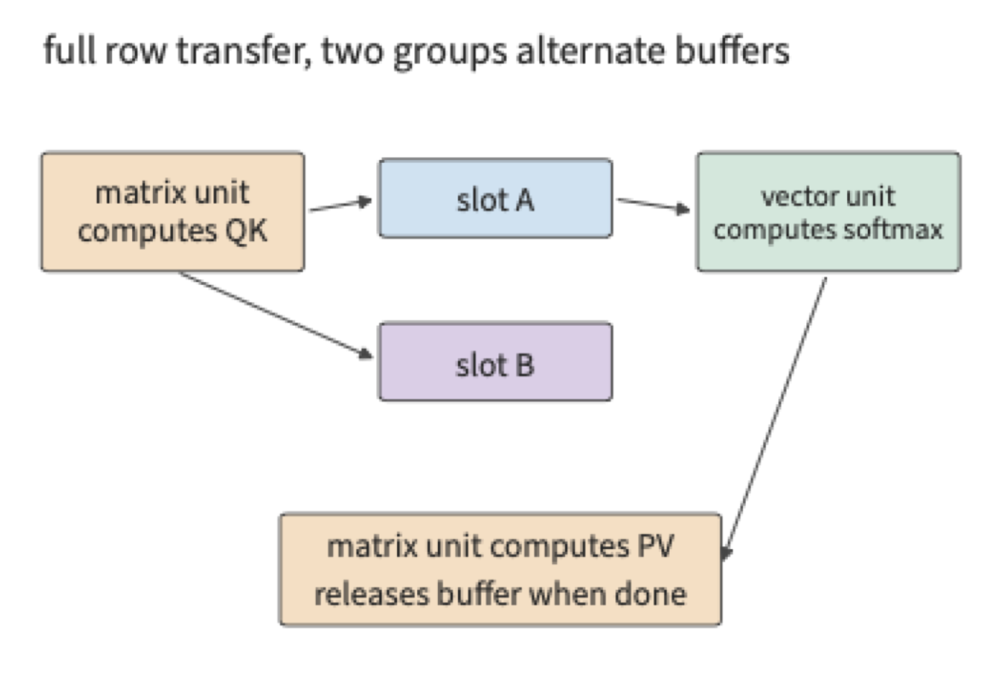
Splitting 128 rows into four groups of 32 along the query direction, one group's FP32 scores plus BF16 probabilities together need \(32\times128\times(4+2)=24\) KiB. Below we compare schemes using one and two buffers to hold the handoff data; each buffer is occupied from that group's QK step until PV completes. QK and PV share the matrix unit, softmax uses the vector unit, and both directions share the handoff interface. With two buffers, different groups can execute different stages of computation at the same time.20
This example runs QK, softmax, and PV over rectangular score blocks, scheduling ready work in complete-row-group order. The tick is still a B200 SM clock cycle, with matrix rate 8,192 FLOPs/tick, handoff interface 128 bytes/tick, and exponent/division at 16 per tick — taken respectively from the FlashAttention-4 paper's per-SM matrix rate, shared-memory read bandwidth, and special function unit rate.9 The vector unit executes scaling, subtraction-and-sum, comparison, exponent, and division serially, with ordinary operations and comparisons at 128 per tick. For a group of 32 rows, QK and PV each take 128 tick; softmax's ordinary operations, comparison, exponent, and division take 96, 32, 256, and 256 tick respectively, totaling 640 tick. Direct handoff of 16 KiB of scores and 8 KiB of probabilities takes 128 and 64 tick respectively, while the write-then-read path takes 256 and 128 tick respectively. Each step is rounded up to the nearest integer tick.
| Handoff mode | Row group size | Slots | Vector computation start | Completion time |
|---|---|---|---|---|
| Write to storage then read | 128 | 1 | 1536 tick | 5118 tick |
| Write to storage then read | 32 | 1 | 384 tick | 5120 tick |
| Write to storage then read | 32 | 2 | 384 tick | 3200 tick |
| Direct handoff | 32 | 2 | 256 tick | 3008 tick |
| Direct handoff | 32 | 4 | 256 tick | 3008 tick |
First, change only the grouping. The vector unit starts computing earlier, moving from 1536 to 384 tick, but the total time is still about 5120 tick. The reason is that there is only one slot: when this group enters softmax, its result still occupies the slot, leaving nowhere for the next group's QK to write, so it must wait for the current group's PV to finish. Starting earlier shortens the first group's wait but does not let adjacent groups overlap.
Adding a second slot lets the next group advance using the other slot, bringing the total time down to 3200 tick, a reduction of about 38%. Switching to direct handoff next, reducing the bytes passing through the storage interface on each handoff, further lowers the total time to 3008 tick, saving about 6%. Adding more slots beyond this does not change the pace of the slowest unit, so the completion time stays the same.
Grouping produces complete results earlier, the second slot lets adjacent groups overlap, and the direct path shortens handoff time. These three changes respectively alter dependencies, the number of groups that can advance concurrently, and the interface workload; Section 4.6.2 will map these three changes onto Ascend's architecture evolution.
Experiment 4-4 · Core: How much on-chip buffering is needed to sustain continuous computation
Draw the timelines for input pipelining using one to four buffer slots, and based on the moments of data arrival, computation completion, and buffer release, determine the minimum number of slots needed to sustain continuous computation; then double the matrix rate and explain how the minimum slot count changes. Next, draw the timeline of each query row group passing through QK, softmax, and PV, distinguishing the time saved by grouping, by adding slots, and by direct handoff respectively. Finally, under a fixed on-chip capacity, analyze how the size of each group's buffer limits the number of groups that can reside concurrently.
4.4.4 Handoffs Between SMs: Fences and the Synchronization Hierarchy¶
The handoff in Section 4.4.3 happens inside one SM. In decode the batch is small, so a matrix–vector product must be spread over all SMs to use the full memory bandwidth; each SM computes only a slice of the output vector, while the next operator (such as RMSNorm) needs the whole vector. The handoff then crosses SM boundaries and can only go through L2.
A cross-SM handoff has two steps: the producer writes the data and then a flag; the consumer reads the flag repeatedly, which is called polling, and reads the data once it sees the new value. The difficulty is ordering. The data and the flag may live in different L2 slices, and the two writes cross the crossbar independently, so the one issued first need not arrive first; a consumer that sees the flag early may read stale data. The producer therefore executes a fence, an instruction that enforces the order of memory accesses, before writing the flag: it waits until L2 confirms that all earlier writes have completed. After seeing the flag, the consumer must likewise not let later reads run ahead. These two constraints are called release and acquire semantics; Figure 4-23 shows the sequence.
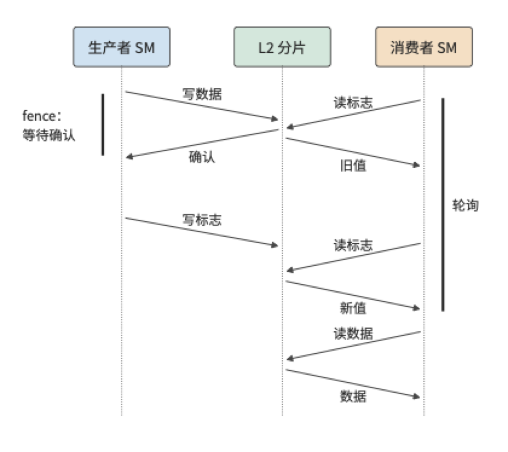
On the RTX PRO 6000, one one-to-one handoff takes about 370 ns (about 1,050 cycles), of which the fence accounts for about 600 cycles. Without the fence it takes only about 140 ns, close to one L2 round trip, but correctness is no longer guaranteed. A signal raised by hardware obeys the same constraint: CUDA's PDL (Programmatic Dependent Launch, which lets the next kernel start once the previous one signals) measures about 366 ns per boundary, the same as the software handoff.
Bringing all SMs together costs more. Each SM increments a shared counter when it finishes; when the count reaches 188, the polling SMs proceed. The 188 increments queue on one address but take less than 80 ns in total; the main costs are the fences on both sides (about 460 cycles each), the round trips for arrival and polling, and the spread in the SMs' finish times, about 1,900 cycles or 660 ns in all. If the full activation vector must also reach every SM, 188 SMs read the same cache lines at once (caches are managed in fixed-size lines, 128 bytes here), and the requests queue on a few slices: when all SMs read one line at the same time, each read takes about 3,400 cycles, 9 times as long as when each SM reads its own line. With the vector replicated 8 times across different slices, one all-SM handoff including the data takes about 1.0 μs.
Figure 4-24 summarizes the cost at each level. The wider the dependency, the farther away the storage it passes through and the higher the cost: a barrier inside one SM (the participating threads are released together once all have arrived) is counted by the SM's hardware and takes about 7 ns; synchronizing within a thread block cluster over the SM-to-SM network takes about 130 ns; beyond the cluster everything goes through L2, with about 370 ns for a one-to-one handoff and about 1 μs for gathering all SMs and delivering the data.
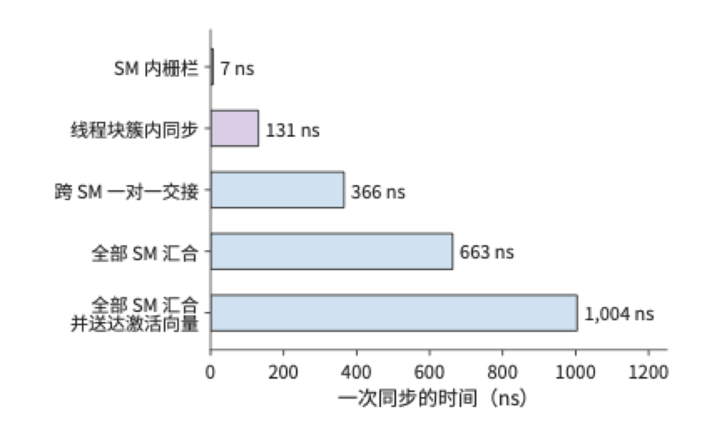
Thread block clusters do not replace L2. Clusters still communicate with each other through L2, and distributed shared memory within a cluster has low read bandwidth: about 1.3 bytes per cycle per SM, against about 6.9 from L2 and about 36 from the SM's own shared memory. Exchanging a 16 KiB activation vector inside a cluster is more than ten times slower than going through L2.
These costs do not depend on how kernels are submitted. The graph replay and persistent kernels of Section 5.5 remove host submission and kernel launch overhead, but not the L2 round trips the dependency itself requires: as long as the next operator needs results from all SMs, each such boundary still costs about 1 μs. The second kind of waiting distinguished in Section 4.1.2, waiting for the previous computation to finish, shows up as these L2 round trips once it crosses SMs.35
4.5 Multi-Chip Packaging and Interconnect¶
When a single accelerator cannot meet compute or storage requirements, computation and storage can be distributed across more chips. Expansion adds resources but also increases the distance between the units that produce data and those that consume it. This section follows three kinds of connections — within a package, between host and accelerator, and between accelerators — to analyze how data placement and transfer granularity affect completion time.
4.5.1 Compute Chips, Memory, and Connections Within a Package¶
A package can contain multiple dies, which together provide compute units and memory interfaces. Both the Blackwell datacenter products and the Ascend 910C use dual-die designs: each die provides local compute capability and a storage interface, and the in-package link handles data exchange across dies.21 With expanded capacity, more models can reside; which side the computation is placed on determines how much access must cross the link.
Let's compute this for two dual-die products. HGX B200 has 180 GB of HBM per GPU and 8 TB/s of bandwidth, with eight HBM stacks split evenly across the two dies, giving each die 90 GB locally at 4 TB/s, while the NV-HBI link between the two dies is 10 TB/s. Ascend 910C has 64 GB locally per die at 1.6 TB/s, with the inter-die link at 270 GB/s per direction. Each die stores 32 GiB of weights, and at some stage all 64 GiB must be read through once, with all computation placed on die 0. Die 0 reads its own 32 GiB from local HBM while simultaneously reading die 1's 32 GiB over the link. The cross-die data must first be read out of die 1's HBM, then pass over the link, at a rate limited by whichever of the two is slower; the local and cross-die paths use different interfaces and can proceed simultaneously, so the time for this stage is determined by whichever path is slower.
B200's NV-HBI is faster than each die's HBM: the technical brief does not specify whether the 10 TB/s figure is bidirectional aggregate, but even computing it as bidirectional aggregate at 5 TB/s per direction, that still exceeds each die's 4 TB/s. Cross-die reads are therefore still governed by die 1's 4 TB/s, and both the local and cross-die reads take about 8.6 ms, so the whole stage takes about 8.6 ms — the same as if each die read its own local weights: placing computation on either side does not change the read time. 910C's link bandwidth per direction is only about 17% of its local HBM bandwidth: local reads take about 21.5 ms, while cross-die reads take about 127 ms, so the whole stage is governed by the link. Moving the computation for die 1's weights to die 1 lets each side read its own local weights, needing only about 21.5 ms; what passes over the link changes from 32 GiB of weights to inputs and results, and if these total 64 MiB, transferring them over the 270 GB/s link takes about 0.25 ms.21
The difference between the two products is determined by the ratio of inter-die link bandwidth to each die's local HBM bandwidth. For B200 this ratio is 2.5, so cross-die reads are as fast as local reads, and the two dies can be used as if they were one GPU. For 910C the ratio is about 0.17, so cross-die reads take about 5.9 times as long as local reads. Huawei's CloudMatrix384 supernode, built from 384 Ascend 910C dies, also deploys experts by die during DeepSeek-R1 decode, placing exactly one expert per die. When the ratio is less than 1, compute units should reuse large weight blocks locally, repeatedly, and only pass smaller inputs and results between dies.
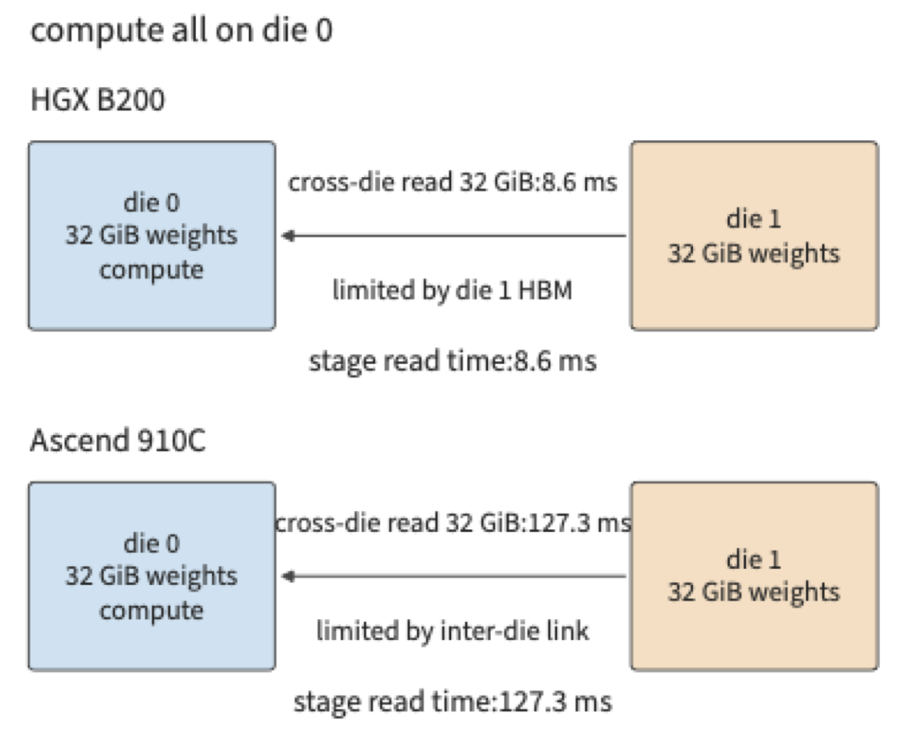
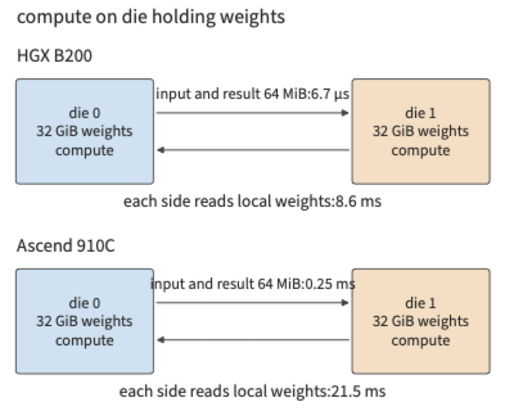
Figures 4-22 and 4-23 compare the relative placement of compute units and weights: the centralized-computation path moves weights, while the compute-in-place path moves inputs and retrieves results. When deciding how to allocate computation tasks, first sketch the data that crosses the link under each scheme, then compare the totals.
This placement also creates an opportunity for parallelism: local reads and computation on both sides can proceed independently, with results handed off at the end. Whether both sides must wait for each other to finish is determined by the model's computation graph; if the next step must merge partial sums, a synchronization point forms there. Chapter 6 will derive these handoffs from specific parallel partitioning schemes.
4.5.2 Data Access Between CPU and Accelerator¶
In-package data placement determines cross-die transfer; similar issues arise outside the chip too. Figure 4-2 showed the data handoff between host and accelerator: data prepared by the CPU needs to be passed to the GPU for use. Input prepared by the CPU is usually placed in host memory first, and a GPU with dedicated GPU memory must fetch this data over PCIe or a platform-specific connection. Host-to-device is called H2D, and device-to-host is called D2H. A copy engine moves data via direct memory access (DMA) using prepared addresses, and the CPU can move on to other work after submitting the copy command.
When the same tensor is first uploaded over the host link and then read from GPU memory by the GPU, the transfer time and the read time must be computed separately. Take the RTX 4090 as an example: this card connects to the host via PCIe 4.0 x16 (16 lanes), with a nominal bidirectional aggregate bandwidth of 64 GB/s, i.e., 32 GB/s per direction; its GPU memory bandwidth is 1,008 GB/s.30 Suppose the input is 64 MiB, and we ignore startup overhead for now, so
The upload time is 31.5 times a single GPU-memory read, exactly the ratio of the two paths' bandwidths. If the data is used only once, the host transfer dominates the time; if it is reused \(R\) times on the accelerator after upload, each use amortizes \(T_{\mathrm{H2D}}/R\). At 100 reuses, the average upload time amortized per use drops to about 21 μs. Each subsequent call needs only submit the address and execution parameters, while the full data remains resident in GPU memory.
We can also find the minimum number of reuses required: when \(R\ge32\), the amortized upload time per use is no longer greater than a single accelerator read. This means improving host link bandwidth matters more for one-off inputs, while keeping weights resident can eliminate repeated uploads.
The copy engine and the compute units are independent execution resources, so the next batch can be uploaded while the GPU computes the current batch. To form a pipeline, two input buffers hold the current batch and the next batch respectively, and the buffers swap roles once the current batch's computation finishes; this is exactly the double buffering of Section 4.4 applied to the host link. If the copy write and the compute read share the same memory interface, that interface must carry both streams of traffic.
Not every platform requires this copy. Apple's CPU and GPU share physical memory, and when a buffer accessible to both sides is used, the GPU can read from the same storage once the CPU has written the data and completed synchronization. Compared with the dedicated-GPU-memory approach, what is eliminated is the separate H2D copy and its transfer time; the GPU's subsequent read is still served by the memory system.8 Unified memory turns the data handoff from "copy, then use" into "synchronize, then use."
A unified address space lets the CPU and GPU refer to data using the same set of virtual addresses. CUDA is NVIDIA's GPU programming and runtime platform; its Unified Memory mechanism can migrate pages according to platform rules, so the address stays the same while the physical location can change.29 The distance between data and the processor using it affects access time, while the address and synchronization mechanisms let the processor locate the data and read it only after the write has completed.
4.5.3 Data Exchange Between Accelerators¶
The host-upload example emphasized data residency and reuse. Cards also frequently exchange activations, expert inputs, or partial results, and the data volume per transfer varies; besides byte count, we also need to account for the fixed overhead per transfer. A single transfer must submit the request, notify the receiver of completion status, and carry the data over the link. Using fixed overhead \(\alpha\), effective one-way bandwidth \(R\), and data volume \(V\), the point-to-point time is
Take an HGX H100 server as an example: within the machine, each H100 connects to the other GPUs via NVLink, with a bidirectional aggregate bandwidth of 900 GB/s, i.e., \(R=450\) GB/s per direction; the A100 SXM's NVLink is 300 GB/s per direction.48 Taking the fixed overhead as \(\alpha=2\) μs — the same value used for each in-machine NVLink round-trip startup in Chapter 7 — suppose we transfer BF16 activations of shape \([M,4096]\), giving a data volume of \(8192M\) bytes. At \(M=1\) the data volume is only 8 KiB, taking about 0.02 μs to transfer on H100, for a total of about 2.02 μs; at \(M=256\) the data volume is 2 MiB, taking about 4.66 μs to transfer, for a total of about 6.66 μs.
Going from A100 to H100, bandwidth improves to 1.5 times, yet the transfer time for 8 KiB only drops from 2.03 to 2.02 μs, while for 2 MiB it drops from 8.99 to 6.66 μs, a reduction of about 26%. If instead we halve the fixed overhead on H100, the transfer time for small data volumes is roughly halved, while large-data transfers save about 15% as well. The two optimizations target different dominant terms in the formula.
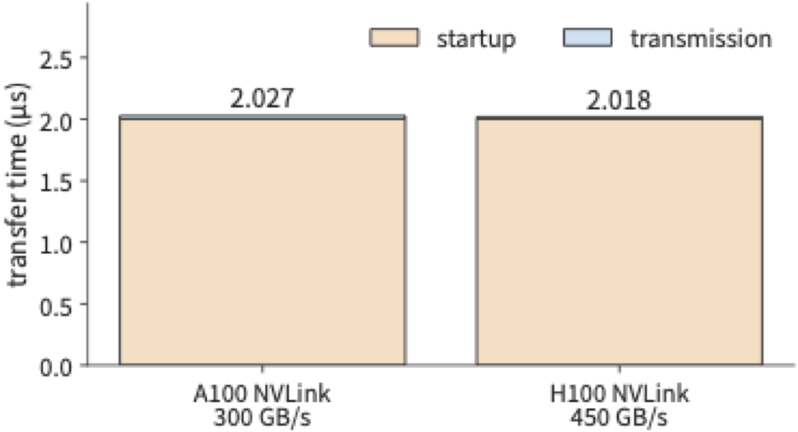
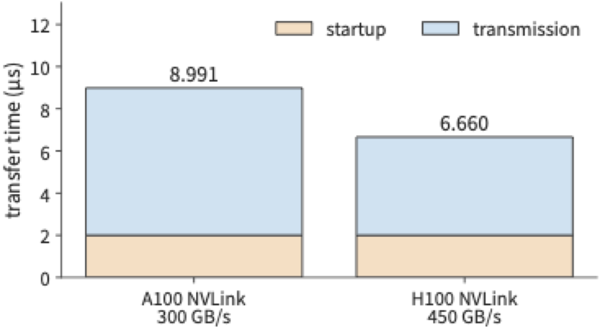
Setting the two terms equal gives the data-volume crossover point:
For our activation example, this corresponds to \(M\approx109.9\), meaning that only from 110 rows onward does the transfer time exceed the fixed overhead. The faster the link, the larger this crossover point, and the more transfers fall on the side dominated by fixed overhead. Below this scale, merging multiple transfers into one reduces the amortized startup overhead per unit of data; above this scale, the benefit of reducing bytes or increasing bandwidth is more pronounced. Merging several pieces of already-ready data into a single send reduces the number of startups; waiting for not-yet-ready data in order to merge into a larger packet increases queueing time instead. Transfer granularity therefore also involves a trade-off between throughput and response time.
If a single execution has 100 small-data-volume exchanges that must be serialized, each taking 2 μs, the fixed overhead alone amounts to 200 μs. Fixed overhead is even larger across servers: a single 16-byte all-reduce (AllReduce, which merges each card's local contribution and gives every card the complete result) across two HGX H100 servers totaling 16 cards has been measured publicly at about 25 μs,32 so 100 such reductions would take 2.5 ms. In this case, even reducing part of the transferred data can hardly shorten the total time noticeably, whereas reducing the number of exchange rounds directly shortens the dependency chain. AllReduce chains together multiple transfers and reductions; Chapter 6 will separately compute the number of rounds, the bytes transferred per link, and the time during which transfer and computation can overlap.
NVLink, Huawei's Unified Bus, and similar interconnects provide the transfer paths between devices, and completion notifications let the receiver start computing once the data has arrived.21
Thought experiment: How does merging sends change completion time and the response for the first piece of data? Four pieces of 8 KiB data become ready in sequence at 0, 1, 2, and 3 μs. Still using H100 NVLink's 450 GB/s per direction and 2 μs startup per send, compare, over the same link, sending each piece as soon as it's ready versus waiting for all of them and sending them merged: when does all the data arrive? And when does the first piece of data become usable by the receiver?
4.6 How Model Demands Drive Architecture Evolution¶
Sections 4.2–4.5 separately analyzed computation, storage, movement, and interconnect. This section places these components back into the generational evolution of NVIDIA, Ascend, and Apple, computing exactly what work each newly added mechanism eliminated and which resource requirement it changed, then explaining how these changes respond to model workloads.
Below we compare, item by item, changes in the matrix unit, numerical formats, data paths, and capacity; each comparison holds the same model workload fixed while changing only the hardware or representation under examination. Hardware parameters and recomputation are available in the accompanying calculation records.45
4.6.1 NVIDIA: How Much Benefit Do the Matrix Unit, Precision, and Data Path Each Bring¶
The value of Tensor Core, computed first using two paths on the same chip. Volta V100 SXM2's ordinary FP32 peak is 15.7 TFLOP/s, while its Tensor Core peak with FP16 input and FP32 accumulation is 125 TFLOP/s, and its HBM2 bandwidth is 900 GB/s. Still taking this chapter's \(4096\times4096\) projection, with input and weights stored in FP16 and the result also written as FP16: the ordinary path converts operands to FP32 before performing multiply-add, while the Tensor Core path directly executes mixed-precision matrix multiply-add, i.e., FP16 input with FP32 accumulation. Both paths read and write the same data.40
Processing 4,096 rows at once, the matrix computation is \(2\times4096^3\approx137.4\) GFLOPs, with input, weights, and output totaling 96 MiB. Ordinary FP32 multiply-add needs \(137.4/15.7\approx8.75\) ms, Tensor Core needs \(137.4/125\approx1.10\) ms, and the read and write-back need about 0.112 ms. The matrix time drops to about one-eighth, because a large volume of regular multiply-adds is handed off to a dedicated unit.
Now reduce the input to a single row. The matrix time for the two paths becomes about 2.14 μs and 0.268 μs, while transferring the 32 MiB of weights along with input and output takes about 37.3 μs. Both paths are therefore now limited by data reads. The same Tensor Core improvement brings a significant benefit for large-batch matrix multiplication but does little for this single-row call, where what still needs speeding up is the weight read.
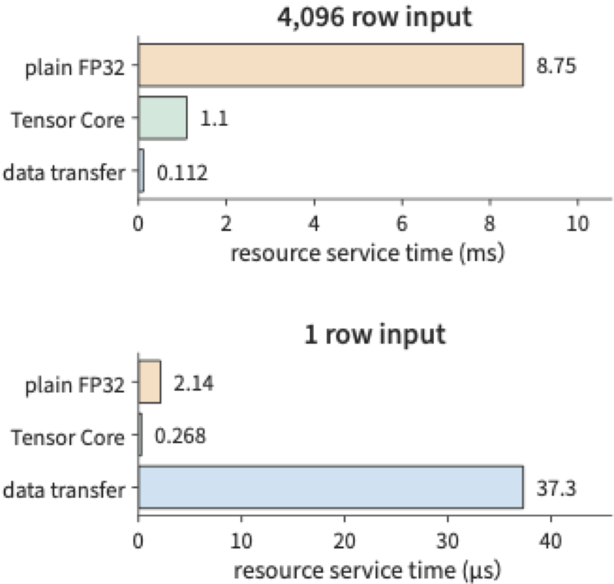
Precision evolution simultaneously changes numerical range, storage volume, and executed instructions. Turing added INT8 and INT4 to Tensor Core, extending low-bit integer inference; Ampere added BF16, TF32, and 2:4 structured sparsity — TF32 preserves FP32's exponent range in matrix multiplication while shortening the mantissa, and 2:4 sparsity organizes computation with two nonzero values out of every four elements. Hopper's Transformer Engine combines FP8 matrix instructions with scale management, and Blackwell further supports block scaling and FP4.395
Take the added BF16 as an example. FP16 and BF16 both occupy two bytes, so switching to BF16 leaves the earlier 32 MiB of weights unchanged. A floating-point number represents a value as a significand times a power of two; normal numbers standardize the significand, while subnormal numbers gradually reduce the number of significant bits in a smaller value range. BF16 uses an eight-bit exponent, with a minimum normal number of about \(1.18\times10^{-38}\); FP16 uses a five-bit exponent, with a minimum normal number of about \(6.10\times10^{-5}\) and a minimum positive subnormal number of about \(5.96\times10^{-8}\). A gradient of \(10^{-8}\) rounded directly to FP16 becomes zero, while BF16 can still represent it. This reduces the need, during training, to adjust scaling to avoid overflow and underflow. The cost is fewer significant digits: near 1, adjacent BF16 values are spaced \(2^{-7}\) apart, versus \(2^{-10}\) for FP16. Low-precision input paired with FP32 accumulation handles input representation and long dot-product accumulation error separately.46
Now look at storage volume. Following the block format from Section 4.2.4 where every 32 values share a one-byte scale — MX is the name of this microscaling format. MXFP8 needs \(16+0.5=16.5\) MiB, and MXFP4 needs \(8+0.5=8.5\) MiB. Reading this BF16 weight set at the RTX 4090's 1,008 GB/s bandwidth takes 33.29 μs; reading the same BF16 weight set at the RTX 5090's 1,792 GB/s takes 18.72 μs, while reading the MXFP4 weight set takes 4.97 μs. The first step comes from a bandwidth increase, while the second step comes from a change in bit width and grouped representation.
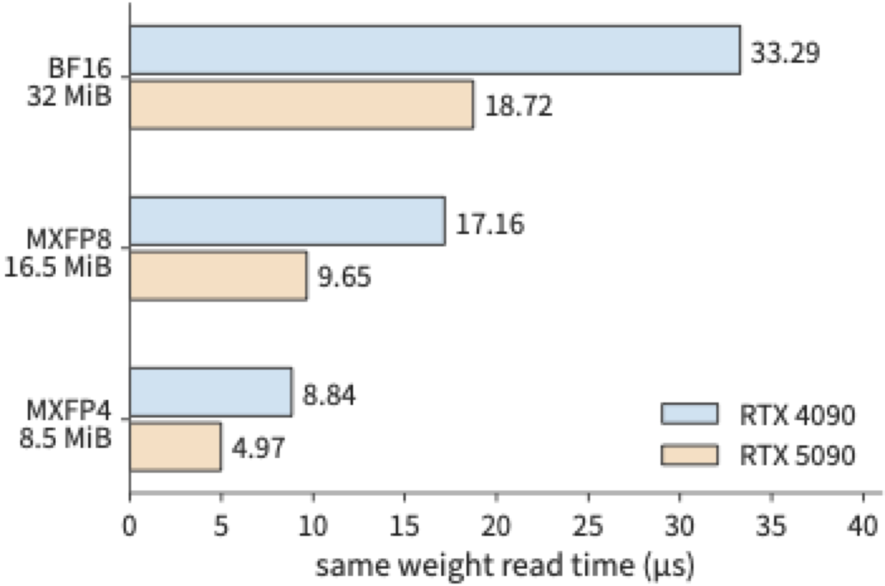
From 33.29 μs to 4.97 μs, the weight-read budget shrinks to about 1/6.69. This benefit comes from two multiplied factors: bandwidth increases to about 1.78 times, and storage volume shrinks to about 1/3.76. The native low-precision matrix path directly processes the compressed representation, eliminating the high-precision weight copy required by the expand-first path in Section 4.2.4.
As matrix units keep getting faster, the architecture starts reducing the preparation and waiting around them. Ampere's asynchronous copy eliminates the general-register relay between global memory and shared memory; Hopper's TMA takes over multidimensional address generation and movement, paired with asynchronous matrix execution; Blackwell datacenter SM100 uses Tensor Memory (TMEM) to hold matrix accumulation results. These three changes respectively alter the movement instructions, the occupancy of general-purpose registers, and the location where intermediate results are stored.41
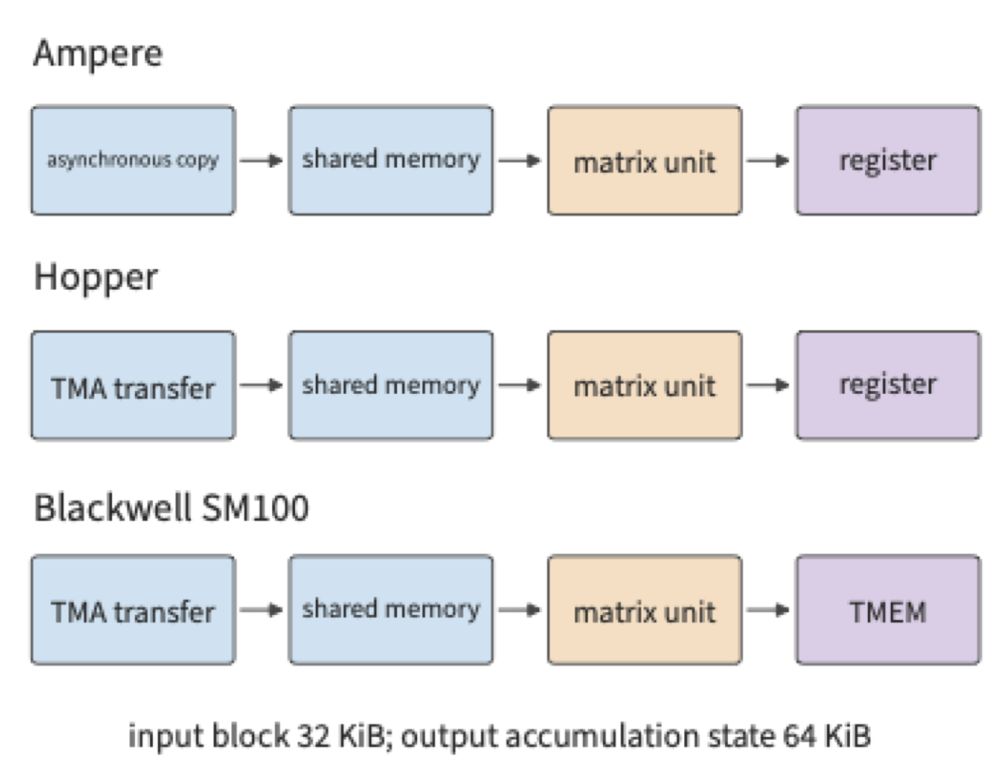
The compute block in Section 4.3.2 needs 32 KiB of input and 64 KiB of accumulation result. Three groups of input plus one group of result total 160 KiB; TMEM independently holds 64 KiB of this, freeing the general-purpose registers for other thread state. This is the direct change that a newly added dedicated storage brings to workload residency.
Moving one generation further, Rubin's FP32 exponent throughput doubles relative to Blackwell, and its BF16/FP16 exponent throughput increases to 4 times, responding to the exponent bottleneck exposed once the matrix unit was accelerated in Example 4-1. Rubin also lets TMA update expert addresses and strides: when MoE switches experts, the matrix shape can stay unchanged, requiring only a switch of weight location, so descriptor updates thereby eliminate repeated address preparation.42
How can consumer, workstation, and datacenter products be placed in the same table? Holding BF16 input, FP32 accumulation, and dense matrix computation fixed, the parameters are as follows. The RTX 3090, 4090, and 5090 use Ampere, Ada, and Blackwell respectively; the A100 and H100 use Ampere and Hopper respectively.45
| Model and product line | Capacity GB | Bandwidth GB/s | BF16/FP32 dense matrix TFLOP/s |
|---|---|---|---|
| RTX 3090, consumer | 24 | 936 | 71.0 |
| RTX 4090, consumer | 24 | 1,008 | 165.2 |
| RTX 5090, consumer | 32 | 1,792 | 209.5 |
| RTX PRO 6000 Blackwell, workstation | 96 | 1,792 | 503.8 |
| A100 80GB SXM, datacenter | 80 | 2,039 | 312.0 |
| H100 SXM, datacenter | 80 | 3,350 | 989.4 |
| H200 SXM, datacenter | 141 | 4,800 | 989.5 |
The RTX 3090 and 4090 have the same capacity, and the BF16 matrix rate rises to about 2.33 times, while bandwidth rises only about 7.7%. The former mainly shortens large-matrix computation, while the latter is what directly shortens single-row weight reads. The RTX 5090's capacity rises to 32 GB, and bandwidth further rises to about 1.78 times; the newly added FP4 path also provides another execution method for models that can tolerate low precision. These three generations of products respectively change the resource budgets for matrix processing, weight reading, and model residency.
The RTX PRO 6000 and RTX 5090 share the same bandwidth of 1,792 GB/s; the workstation card's main additions include 96 GB of ECC-equipped memory, higher BF16/FP32 accumulation throughput, and Multi-Instance GPU (MIG), which partitions one GPU into resource-isolated instances. For streaming reads of weights of the same size, the two have the same bandwidth budget; for large matrices or resident data exceeding 32 GB, the results differ. SM120 and SM100 are two different SM instruction architectures. Consumer and workstation Blackwell use SM120; datacenter Blackwell such as B200 uses SM100, which employs the TMEM and corresponding matrix instructions introduced earlier, and software selects the kernel according to the target architecture.48
Datacenter cards also provide HBM and high-speed interconnects aimed at multi-card use. A100 SXM's NVLink bidirectional aggregate bandwidth is 600 GB/s, and H100 SXM's is 900 GB/s, giving 300 and 450 GB/s per direction respectively when converted to one-way. Following the method of Section 4.5, the link serialization time (data volume divided by one-way bandwidth) for transferring 64 MiB of data is about 224 and 149 μs respectively. As computation scale increases, tensor parallelism (splitting the matrices within the same layer across multiple cards) makes repeated use of these connections for per-layer communication, training gradient exchange, and expert dispatch. The RTX 4090 and 5090 have no NVLink; the RTX 3090 supports dual-card NVLink. Chapters 6 and 7 will use these link parameters to compute the time for tensor splitting, gradient exchange, and expert dispatch.48
Returning to the comparison of computation and bandwidth: going from A100 to H100, the BF16 matrix rate rises to about 3.17 times and bandwidth rises to about 1.64 times, while FP8, TMA, and new collaboration mechanisms are added at the same time. Going from H100 to H200, the main additions are capacity and bandwidth, with the BF16 matrix rate in the table essentially unchanged. These two sets of changes correspond respectively to "changing computation and execution organization together" and "keeping computation capability fixed while strengthening storage." After substituting model workloads in Section 4.8.2, we will be able to judge which set of increments proves more useful.
4.6.2 Ascend: from CNN convolution unrolling to Transformer's matrix-vector handoff¶
When the early Ascend 910 (referred to as 910A in later generation comparisons) was designed, convolutional neural networks (CNNs) such as ResNet made up most of the training workload. The author's design retrospective records this context; the DaVinci paper further describes the division of labor among Scalar, Vector, Cube, and MTE. MTE includes img2col, transpose, and decompression modules, where img2col organizes convolution windows into matrix input during data movement. We first calculate what this specialized capability saved in CNNs, then switch the workload to Transformer. 47
Why is convolution unrolling worth handing to hardware? Take a ResNet-style \(3\times3\) convolution, with input \(56\times56\times64\), output channel count 64, stride 1, and padding to preserve spatial dimensions. The input, stored in FP16, occupies \(56\times56\times64\times2=401,408\) bytes, about 0.383 MiB. Each output position uses 64 channels from nine neighboring positions, so the unrolled matrix is \(3136\times576\), occupying about 3.445 MiB — nine times the original input.
If the unrolled matrix is first generated in HBM and then read in by matrix multiplication, an extra 3.445 MiB write and one read occur, totaling 6.891 MiB. The early 910's HBM bandwidth is 1.2 TB/s, so this unrolled matrix's write and read alone consume about 6.02 μs of bandwidth time. MTE completes the window unrolling during on-chip movement, saving this write and read of the HBM intermediate copy. Once the input window is organized on-chip, it is fed directly into the matrix computation, and HBM retains only the original input and weights. 44
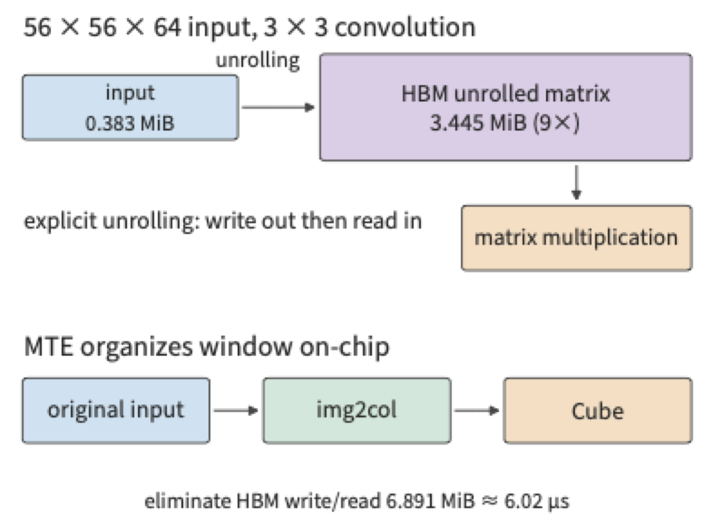
Now consider the computation division of labor. This convolution requires \(2\times3136\times576\times64\approx231.2\) MFLOPs. The DaVinci paper's Ascend-Max Cube delivers 8,192 FLOPs per cycle, so the matrix service time is 28,224 cycles. The output ReLU processes only 200,704 elements; at a 256-byte vector width, one group holds 128 FP16 elements, giving 1,568 groups. The convolution's matrix computation and post-processing differ enormously in scale, so Cube, Vector, and the unrolling hardware each carry a clearly defined portion of the work.
Switching to attention shifts both the resource ratio and the data direction. For a \(128\times128\) attention block with head dimension 128, QK and PV together require about 8.39 MFLOPs, which at the same Cube rate takes 1,024 cycles. Softmax needs to compute 16,384 exponentials and perform max reduction, summation, and normalization. At a 256-byte vector width, one group of FP32 data holds 64 values, so the exponential step alone requires 256 groups. To keep the exponential stage within the matrix's 1,024 cycles, the exponential portion must process one group every four cycles on average — that is, 16 exponential results per cycle. Reduction and normalization follow, producing the input to PV.
On the same Cube, CNN convolution's matrix work takes 28,224 cycles, while the attention block takes only 1,024 cycles; meanwhile the vector work shifts from simple ReLU to exponentiation, reduction, and normalization. In the DaVinci paper's BERT analysis, most layers are dominated by Cube time. Once attention is separated out, the new demands Softmax places on vector throughput become visible. 44
The convolution window unrolling that mattered for CNNs has nothing to do on Q, K, V projections, since the projection input is already a matrix. Attention instead needs to hand the QK result to Vector for Softmax, then return the probabilities to Cube for PV. The work img2col saves in convolution unrolling differs from the work required by these two matrix-vector handoffs; once the workload shifts, the focus of newly added hardware resources shifts with it.
After separate scheduling, how does the handoff path affect speed? The Atlas A2, home of the 910B, separates matrix core AIC from vector core AIV under independent control; the 910C goes further with a dual-die design, each die having 24 AICs and 48 AIVs. Separate control lets different work proceed independently, while AIC and AIV exchange results through a global address space, with the actual data passing through the cache hierarchy. CloudMatrix384 compresses KV state in MLA, arranging matrix and vector work through fusion and dynamic tiling; MTP processes multiple prediction positions at once, further changing the row counts of these computations. 44
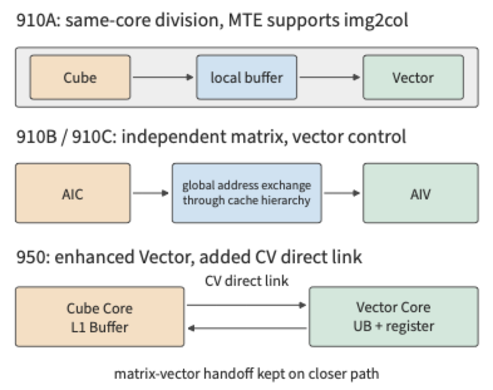
Let's quantify the interface workload using the same attention block. Scores and probabilities are each handed off in FP32, with each tensor occupying 64 KiB. One handoff, written out and read back through the outer switching interface, totals 128 KiB; the two handoffs QK→Softmax and Softmax→PV together total 256 KiB. If both handoffs are carried by the same outer interface, completing them within 1.024 μs requires about 256 GB/s from that interface. Substituting the 94 GB/s last-level cache (LLC) bandwidth per core given in the DaVinci paper, this work would take about 2.79 μs — already exceeding the Cube's 1.024 μs matrix service time at 1 GHz. Even if matrix computation keeps getting faster, the outer interface still has to move these bytes.
The next change in Ascend 950 targets exactly this outer interface: it adds a direct CV (Cube–Vector) pathway between Cube's L1 buffer and Vector's Unified Buffer (abbreviated UB in Ascend documentation, not the same concept as the Unified Bus interconnect in Chapter 6). The two 64 KiB intermediate tensors are handed off through this direct connection, transferring 128 KiB total, removing the 256 KiB write/read that previously went through the outer interface. Completing both handoffs within 1.024 μs over this direct pathway requires about 128 GB/s; if the handoff format changes to FP16/BF16, the requirement halves again to about 64 GB/s.
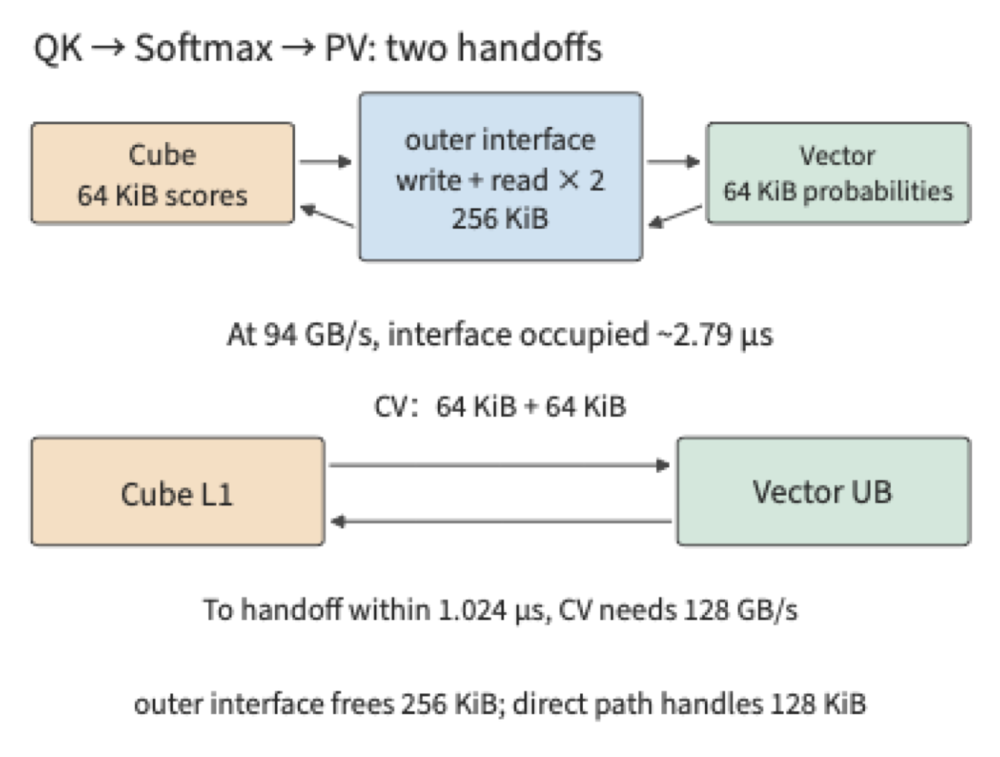
950 also doubles the FP16/FP32 throughput of a single Vector Core, adds a register file between the Unified Buffer and the vector arithmetic logic unit (ALU), and optimizes the execution of Softmax and the GELU activation function. For the same amount of ordinary vector work \(F_v\), \(F_v/P_v\) drops to \(F_v/(2P_v)\); if the vector stage was originally twice the matrix stage, this change can rebalance the two. For the attention block above, exponential throughput needs to reach 16 results per cycle. The newly added NDDMA handles multidimensional addressing and layout preparation, and BufferID organizes synchronized handoffs using buffer identifiers. 6
950's low precision can also be understood through the same workload lens: at the same frequency, FP8-class matrix computation runs at twice the rate of FP16, and MXFP4 at four times. For a fixed matrix \(F\), the computation service time is successively \(F/P\), \(F/(2P)\), \(F/(4P)\); but the two FP32 score-and-probability handoffs remain the same size as before. Only when the handoff path, format, or layout changes at the same time does the interface workload actually decrease. Matrix, vector, and the CV pathway must evolve together to turn local acceleration into a gain for the entire attention block.
4.6.3 Apple: how large unified memory converts into model execution capability¶
Apple's CPU, GPU, and independent Neural Engine share unified memory. Unified memory eliminates data copying between processors, and it also lets locally run models use a larger memory pool. Below, we first calculate the model size unified memory can hold, then calculate how much data must be read to generate one token.
First, check the generational relationship between capacity and bandwidth. The representative M1 Ultra configuration is 128 GB at 800 GB/s; M2 Ultra extends to 192 GB at 800 GB/s; M3 Ultra's 80-core GPU configuration comes in 256 GB and an officially documented 512 GB, both at 819 GB/s. M4 Max also has a 128 GB configuration, at 546 GB/s bandwidth. 49
When capacity doubles, which timings change? First keep the model, precision, and batch size fixed. Going from M3 Ultra's 256 GB to 512 GB, bandwidth remains 819 GB/s, so \(V/R\) for the same execution is exactly the same. Going from M1 Ultra to M3 Ultra, bandwidth rises from 800 to 819 GB/s, increasing read speed by only about 2.4%. An increase in capacity lets more weights, KV, or requests reside in memory, while an increase in bandwidth directly changes the read time for the same batch of data.
Take Qwen3-8B, BF16, single request, 8,192 positions; this book's tensor inventory gives an interface payload of about 16.345 GB per step for weights and KV. The read lower bound for M1/M2 Ultra is \(16.345\ \mathrm{GB}/(800\ \mathrm{GB/s})\approx20.43\) ms, for M3 Ultra it is \(16.345\ \mathrm{GB}/(819\ \mathrm{GB/s})\approx19.96\) ms, and for M4 Max it is \(16.345\ \mathrm{GB}/(546\ \mathrm{GB/s})\approx29.94\) ms. Despite both having 128 GB, M1 Ultra reads this step's data about 9.51 ms faster than M4 Max. 45
Capacity's main value is easier to see with a large MoE. Qwen3-235B-A22B, using this book's 4-bit storage scheme along with scale factors and tensors kept at higher precision, has about 123.142 GB of resident weights. For a single request with an 8K context, plus KV and a 2 GiB workspace, the total is about 126.867 GB. A 128 GB machine leaves only about 1.13 GB free; reserving another 8 GB for the operating system and other applications means about 134.87 GB is needed. The 256 GB or 512 GB configurations have enough room for this budget.
MoE accesses only the selected experts per step. For the same single request, the per-step weight-and-KV interface payload is about 13.697 GB, requiring about 16.72 ms on M3 Ultra — rather than the roughly 150 ms obtained by reading all 123.142 GB of weights every step. For MoE, the total weights determine capacity, while the currently selected experts determine per-step weight reads. A large MoE can thus simultaneously exhibit "needs large memory" and "reads relatively little per step." 15
Now substitute the eight-request routing results from Section 4.3.3. The per-step read volumes for concentrated versus dispersed routing are 24.737 GB and 75.967 GB respectively, corresponding to 30.20 ms and 92.76 ms on M3 Ultra. Each step produces eight tokens, giving read throughput budgets of \(8/0.03020\approx265\) token/s and \(8/0.09276\approx86\) token/s respectively. The 256 GB and 512 GB configurations can accommodate the same eight-request task; routing reuse determines the difference between these two read budgets.
How do local storage and GPU-dedicated units enter this set of calculations? M3 introduced Dynamic Caching, allocating GPU local memory according to runtime needs; M4 continues this organization. These mechanisms affect work residency and on-chip resource utilization, while model capacity is determined by unified memory. M5 further adds a Neural Accelerator inside each GPU core, accessed through interfaces such as the Metal 4 Tensor API; the independent Neural Engine continues to exist. Dedicated units inside the GPU accelerate matrix processing, while data preparation and general computation continue to be organized by GPU programs. 438
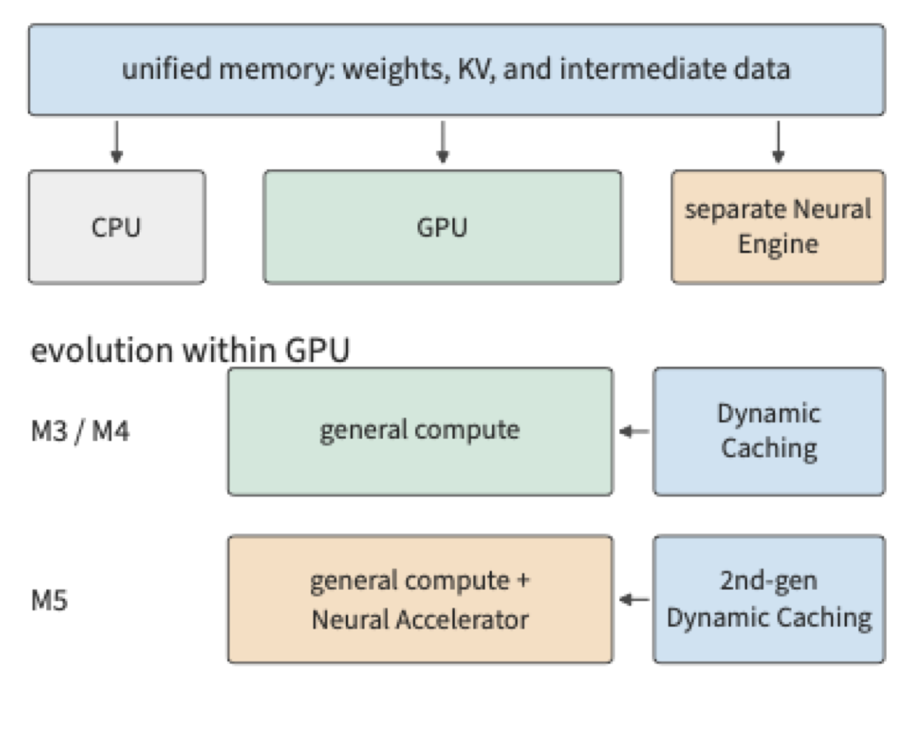
Memory bandwidth also increases generation over generation: from base M4 to base M5, unified memory bandwidth rises from 120 to 153 GB/s, an increase of about 27.5%. The read time for the earlier 32 MiB of weights drops from about 279.6 μs to 219.3 μs, a reduction of about 21.6%. Apple states that M5's GPU AI peak exceeds four times that of M4; the weight read for the same single-row projection is still determined by the bandwidth above. Once the number of input rows increases, weight reads get amortized across more computation, and the new matrix unit becomes a more accessible source of benefit. This phenomenon corresponds exactly to the V100 results for the two row counts discussed earlier. 8
These developments turn the feedback relationship in Figure 4-3 into concrete resource changes: large matrices drive dedicated multiply-add units, Transformer increases vector and handoff requirements, and large MoE expands resident capacity requirements.
The brain offers another reference point for organizing computation. Neurons update state, synapses store connection strengths and participate in signal transmission, and memory and computation are distributed across a highly parallel network. Local connections, sparse activity, event-driven operation, and three-dimensional organization shorten many signal paths. Neuromorphic chips and compute-in-memory devices borrow parts of these ideas; in digital chips, the corresponding engineering directions are larger local buffers, higher memory bandwidth, shorter interconnects, and more reuse near the compute units.
4.7 Specialized Architecture¶
The preceding sections improved general-purpose accelerator efficiency through reuse, pipelining, and locality. If some conditions of the workload remain stable over the long term, those conditions can be built directly into the hardware design: fixed computation rules, fixed communication order, even fixed weights. Specialization reduces certain work, and concentrates more resources on what remains.
4.7.1 TPU¶
TPU v1's inference computation is centered on regular matrix multiplication. An array of \(256\times256\) multiply-add units forms the core; weights are loaded into the array through an on-chip first-in-first-out queue (FIFO, a buffer that retrieves items in arrival order), inputs are fed in from the Unified Buffer, results are held in dedicated accumulator storage, and then passed to the activation unit. A single instruction can describe a large-scale matrix operation, and local connections repeatedly pass operands along, reducing the control and long-distance access needed for each multiply-add. 4
A \(256\times256\) block of 8-bit weights is 64 KiB. Processing just one input row performs \(2\times256^2=131,072\) operations, giving two operations per byte of weight; processing 256 rows performs about 33.6 M operations, giving 512 operations per byte of weight. The weights stay fixed while the amount of computation grows to 256 times the original — exactly the projection reuse relationship from Section 4.1, realized in the array.
To capture this benefit, the array needs continuous input rows. The weight FIFO can hold four such weight blocks, so weight loading and computation can be linked through buffering; as inputs continuously feed into the array, the independent accumulator storage holds the partial sums. The large array, input buffer, and weight queue thus work together: the array supplies the multiply-add units, and the buffers ensure these units continuously receive the operands they need.
When the array starts up, operands still need to propagate along the connections to each compute position; at the end, results need to be gathered for output. The more blocks computed consecutively, the smaller the pipeline fill-and-drain time amortized per block, so small tasks are more affected by these fixed steps.
Once the workload changes, the ratio among the hardware's various parts also needs adjustment. Training adds writable state, gradients, and inter-accelerator exchange; long-context generation increases KV occupancy and requires each generation step to wait for the previous step's result. Google's TPU 8t/8i organizes training and sampling service separately, reflecting how different stages demand different amounts of matrix, vector, storage, and interconnect resources. 22 TPU's common approach is to arrange resources around known work, with the specific ratio shifting as the primary workload changes.
4.7.2 Groq, Graphcore, and Cerebras¶
Keeping more data on-chip reduces long-distance access. Following this idea, computation and storage can be distributed across many local units, or the chip itself can be made larger to hold more such units on-chip. Both approaches let large amounts of data be used by nearby compute units, and both require arranging exchange among units.
Groq's Tensor Streaming Processor (TSP) has its tensor generation, transmission, and usage timing arranged in advance by the compiler. Graphcore's Intelligence Processing Unit (IPU) consists of many compute units with local storage (Graphcore calls them tiles), where each compute unit collaborates on tasks through computation, synchronization, and data exchange. Cerebras lays large amounts of compute and storage across a wafer-scale chip; the third-generation Wafer-Scale Engine, WSE-3, has 44 GB of on-chip SRAM. SRAM is well-suited for direct integration inside a compute chip, trading area for low-latency access. 23 These designs achieve locality at different scales: shortening communication paths as much as possible, keeping repeatedly used data close to the computation.
The difficulty with distributed capacity is that demand varies from place to place. When one unit frees up storage space, other units cannot directly treat that space as their own local storage; rebalancing requires migrating data or moving computation. Mixture-of-experts models with uneven routing are especially prone to this: the total volume stays the same, but requests concentrated on a few experts make a few compute units busier.
Imbalance in local storage can be alleviated by reallocating tasks, but another problem worsens as service scale grows: total KV volume increases. Continuing with Qwen3-8B, a request with 8,192 tokens has a BF16 KV of 1.125 GiB. The Groq TSP has 220 MiB of SRAM per chip, 23 and just storing the BF16 weights alone would require 72 chips. If KV is stored on separate chips and can be split evenly, a single request needs \(\lceil1152/220\rceil=6\) chips; eight requests total 9 GiB, needing 42 chips; if all eight requests' contexts grow to 32,768 tokens, 168 chips are needed.
Going from 6 to 42 to 168, what increases is writable state — the model's weights do not increase. Storing weights on-chip removes one category of reads, but sustained service still needs capacity for growing state. As chip count grows, the KV distributed across those chips must also be gathered across chips; capacity expansion and communication demand arise from the same workload at the same time.
Wafer-scale integration shortens some connections that would otherwise cross packages, but data still travels through the network across multiple compute units. Placing computation that uses the same state nearby reduces the links and synchronization traversed; spreading tasks evenly favors using more compute positions. Allocating computation tasks must both let data be reused locally and avoid a few units being overloaded while the rest sit idle — the same principle as multi-die placement.
4.7.3 Fixed Dataflow and Fixed Weights¶
Specialization redistributes hardware resources by exploiting conditions that are already fixed at execution time. Fixing the operator types simplifies instructions and control; fixing the dataflow lets communication be arranged in advance; fixing numerical formats lets storage and compute units be designed at exactly the required bit width; fixing weights allows a dedicated storage structure to be designed for parameters that no longer change. Control and data paths originally designed to handle many cases can be simplified accordingly.
When the model changes, reconfigurable designs adapt to new computation by updating connections and scheduling. SambaNova's dataflow organization and FPGA's reconfigurable pathways both allow reconfiguring some connections and execution order; fixed-weight designs, by contrast, organize storage and computation around specific parameters. 23
Fixed weights does not mean the design can only perform one task. Changing the input lets the same model perform different higher-level tasks. The same set of model weights can handle document Q&A, or propose code modifications based on code and test results; each invocation uses its own context state. Hardware can therefore be designed with weight pathways dedicated to the shared model execution, while writable storage holds the context of each individual request. Below, weights and context are measured separately, to calculate how much capacity and bandwidth this division of labor can free up.
The author's OpenTallas project studies an architecture that places immutable weights in a mask ROM; a mask ROM is a read-only memory whose stored content is fixed at manufacturing time. Using Qwen3-8B from that project as an example, the following formulas estimate how the design of "reading weights from a dedicated ROM, reading and writing KV from HBM" changes the transfer volume on each interface. 24 Each batch reads only the weights needed for the current step's computation, about \(W=15.1\) GB; each request fully reads the KV for 8,192 tokens, about \(K=1.21\) GB. The fully resident weights total about 16.4 GB, of which each step reads only the portion involved in that step's computation.
First, consider how much reading the same interface originally handled. When weights and KV share HBM, the per-step read is \(W+BK\). After moving weights to a dedicated ROM, HBM handles only \(BK\). The ratio between these two HBM read volumes is
At \(B=1\), HBM reads drop from about 16.3 GB to 1.21 GB, and read time drops to about \(1/13.5\) of the original. At \(B=16\), KV is already about 19.3 GB, and the total drops from about 34.5 GB to 19.3 GB, about 1/1.8 of the original. As batch size grows, the weight reads are already amortized across more requests, so the relative benefit of further eliminating weight reads diminishes.
Setting \(BK=W\) gives the crossover point where KV read volume equals weight read volume, at about \(B=12.5\); starting from integer batch size 13, KV read volume exceeds weight read volume. Figure 4-36 shows this transition with a horizontal line and a slanted line.
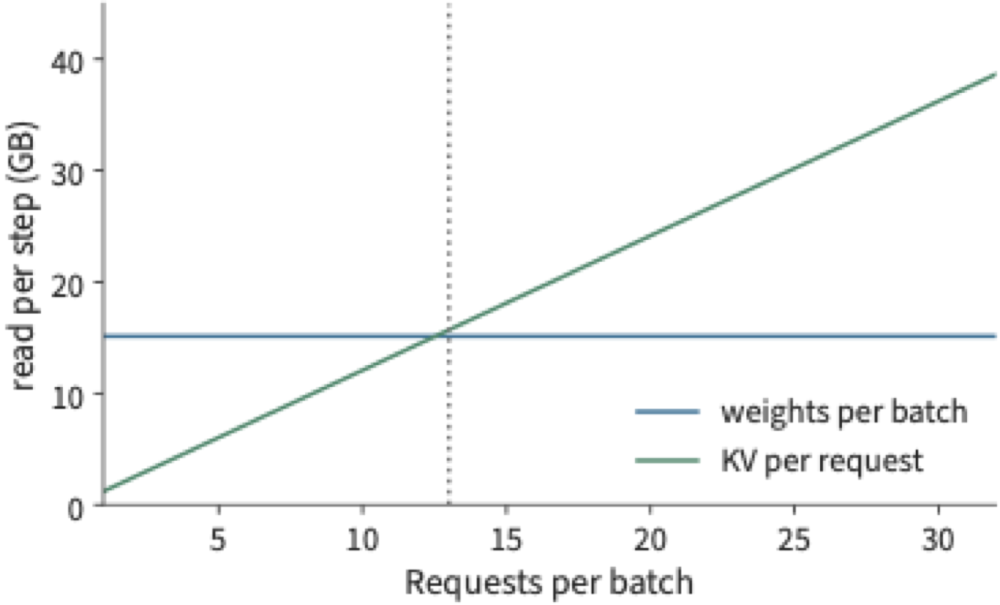
With a dedicated ROM interface, weights and KV can be read simultaneously. Let the two interfaces have bandwidth \(\beta_{\mathrm{ROM}}\) and \(\beta_{\mathrm{HBM}}\) respectively; keeping the model, precision, context, and batch size fixed, the lower bound on storage time when the two paths overlap is
Raising ROM bandwidth shortens the first term, until KV reading becomes the slower path. If the target is 10,000 token/s for a single user, each token has only 100 μs, and just the 1.21 GB of KV would require about 12.1 TB/s of HBM bandwidth.
A dedicated ROM also frees up the HBM capacity that previously held weights. With a fixed 8K context, using a stack of 24 GB eight-layer HBM3E (Section 4.1.3) as KV storage, after subtracting a 2 GiB workspace, and at 1.125 GiB of KV per request, it can hold 18 requests; the original design, which also needed to store the full BF16 weights, could hold only 4 requests. 37 As the context grows to 32K, each request's KV read grows fourfold, and the earlier weight/KV crossover point drops from about 12.5 requests to about 3.13 requests.
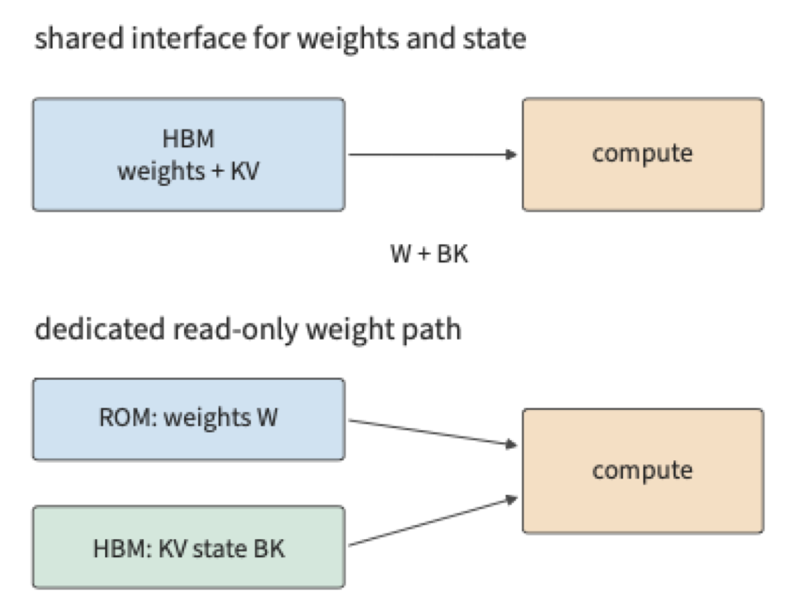
The same 100 μs deadline can also be used to determine the number of compute units needed. The workload is taken from the project's historical execution record: a set of tensor operations totaling 15,134,641,792 operations. Assuming each computation lane completes one fused multiply-add (FMA) per cycle at 1 GHz, the minimum number of lanes needed within 100 μs is
256 lanes would need about 29.6 ms to complete these operations. If only 40 μs is allotted for the matrix computation, and effective utilization is 60%, then 315,306 lanes are needed — about 4.2 times the initially computed number of lanes. The tighter the time budget, the smaller the margin left for waiting, and the higher the compute power and storage bandwidth that must be provisioned.
4.8 Analyzing Performance by Architecture and Selecting Accelerators¶
Sections 4.6 and 4.7 calculated how different architectures change computation, storage, and exchange work. This section applies those results to device selection: first synthesizing an execution time model, then using that same model to compare candidate devices, then calibrating with measurement, and finally comparing the cost and energy consumption of task completion.
When selecting hardware, you also need to preserve a usable resource description for downstream partitioning and scheduling: effective compute at the target precision and matrix shape, capacity and bandwidth at each storage tier, register and shared-memory limits, and the unidirectional bandwidth, startup latency, and shared egress between devices. Chapter 5 uses the local resource constraints among these — tiles (data blocks carved from matrices), buffers, and concurrency — while Chapters 6 and 7 use the interconnect parameters to constrain cross-card placement and communication groups. The computation and data requirements of the same model do not change, but which resource tier these requirements land on, and which paths they traverse, changes the execution time and the most suitable partitioning.
4.8.1 Building an Execution Time Model from Resource Budgets¶
Execution time comes from two relationships: which operations the same hardware unit must execute in sequence, and which results a later piece of work must wait for. The former determines how long each unit needs to work; the latter determines the execution order of the steps.
Start with shared resources. If the same matrix unit handles two kinds of work, each 1 G operations, at rates of 100 and 200 Gops/s respectively, they occupy 10 ms and 5 ms respectively, totaling 15 ms. If the workload of the \(i\)-th kind of work on resource \(r\) is \(w_{r,i}\), with corresponding rate \(p_{r,i}\), then the time this hardware unit needs to complete these operations is
When weights and KV share a memory interface, their traffic adds together; when QK and PV share a matrix unit, their computation times add together. This work consumes the same slice of hardware capability even when distributed across different operators.
Now consider independent resources. When the matrix unit and data movement can proceed simultaneously, the total execution time is at least equal to the time needed for the slowest unit to complete all its operations, so \(T\ge\max_r T_r\). Section 4.2's steady-state analysis used exactly this relationship: when the exponential computation does not speed up, the matrix unit finishes early and sits idle, and the completion pace of each block is still dictated by the exponential.
Finally, add dependency. Suppose stage one needs 10 μs of matrix work and 1 μs of memory work, and stage two needs 1 μs of matrix work and 10 μs of memory work; within each stage the work can overlap, but stage two must wait for stage one to finish completely. Stage one thus takes 10 μs, and stage two also takes 10 μs, for a total of 20 μs. Simply summing total resource usage would give 11 μs each for matrix and memory; the extra 9 μs comes from the stage dependency: stage one's matrix computation and stage two's memory access must happen in sequence and cannot overlap.25
To apply these relationships to a specific device, you first need to pick the right rate: the matrix unit's operation rate also depends on input and accumulation precision. For the RTX 4090's Tensor Cores executing dense matrix operations, the peak with FP16 input and FP16 accumulation is about 330 TFLOP/s, and about 165 TFLOP/s with FP32 accumulation; this chapter's BF16/FP32 projections use 165.2 TFLOP/s.26 For 8.59 GFLOPs, at these two rates, the required time is about 26 and 52 μs respectively. The read time computed below is about 37 μs, so the choice of rate directly changes the relative magnitude of computation time versus read time.
Once resource time and execution dependencies are established, you can also find the bottleneck transition point as load changes. For this chapter's Q projection, the Roofline model expresses this transition as a relationship between arithmetic intensity and throughput.
Let \(P\) be the matrix peak, \(R\) the off-chip bandwidth, and \(F\) and \(V\) the projection's workload and access volume respectively. The time needed for computation and data transfer are \(F/P\) and \(V/R\) respectively. When computation and access fully overlap, the larger of the two determines the time lower bound, giving the Roofline model's throughput upper bound as
Here the slanted line \(RI\) describes how many operations the bandwidth can support, and the horizontal line \(P\) describes how many operations the matrix unit can complete. The two intersect at \(I^*=P/R\). Below the intersection, data supply is the slower factor; above it, each byte already corresponds to enough operations that computation speed becomes the new bottleneck. This piecewise line is the hardware's allowed ceiling — any measured point falls below it — and the distance between measured throughput and this line is the utilization defined in Section 1.2.2. When arithmetic intensity is above the intersection, it is measured by MFU; below it, by MBU.
Continuing with Section 4.1's projection of reading input and weights once and writing output once, the RTX 4090's matrix operation peak with BF16 input and FP32 accumulation is 165.2 TFLOP/s, with bandwidth 1.008 TB/s. Substituting the same \(F\) and \(V\) gives:2
| Tokens processed this pass \(M\) | Matrix compute time | Off-chip data transfer time | Max of the two | Dominant resource |
|---|---|---|---|---|
| \(M=1\) | ~0.20 μs | ~33.3 μs | ~33.3 μs | Memory |
| \(M=256\) | ~52 μs | ~37.4 μs | ~52 μs | Matrix |
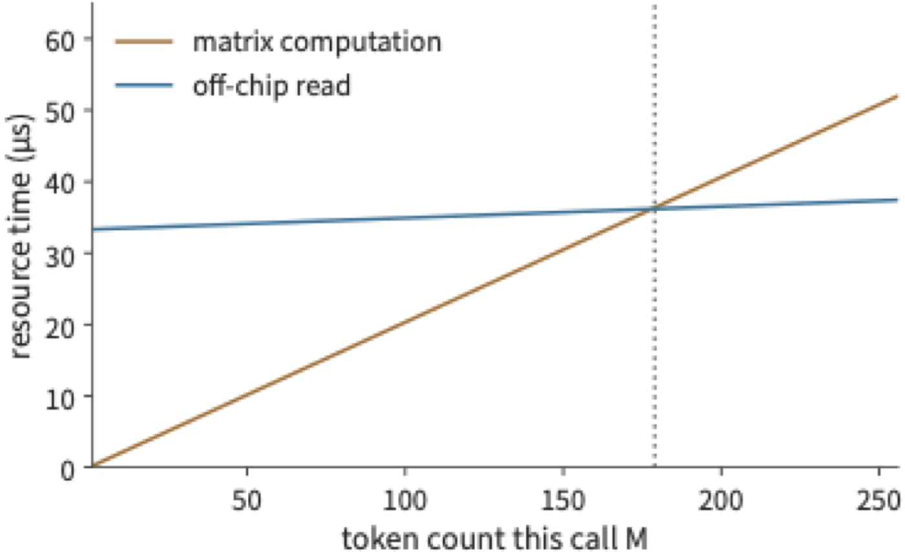
You can also find the input row count at which the transition occurs. Let \(d=4096\); Section 4.1's intensity can be written as \(I(M)=Md/(d+2M)\). Setting this equal to \(I^*=P/R\) gives
Substituting the unrounded rate values, \(I^*\approx164\) FLOPs/byte, gives \(M^*\approx178.1\). So from integer row count 179 onward, matrix compute time exceeds data transfer time. This transition point turns "larger batches favor the matrix unit" into a computable row-count threshold.34
Experiment 4-5 · Core: How batch size shifts the performance bottleneck across architectures
Derive and plot the arithmetic intensity of the Q projection from 1 to 256 rows, then separately double the matrix compute throughput and the memory bandwidth, and find the input row count at which compute time equals read time. Then add attention and expert matrices to the resource table, and explain how context length and the distribution of input rows per expert change each unit's processing time and where the bottleneck lies. Choose two specific accelerators, estimate the execution time for the same task using each one's resource parameters, and compare the bottlenecks.
Section 4.8.2 extends this method from a single projection to the whole model, computing decode's dominant reads and prefill's matrix work separately, and checking which devices can hold the required state.
4.8.2 Comparing Candidate Accelerators with the Same Model¶
Start with a fixed, easily reproducible example: Qwen3-8B, BF16, single request, with 8,191 existing historical positions, becoming 8,192 after this step's addition. Resident weights are about 16.381 GB, KV about 1.208 GB, workspace taken as 2 GiB, for a total budget of about 19.737 GB. The dominant weight- and KV-interface payload for one decode step is 16.345 GB. The token embedding reads only the row corresponding to the current token, while the output head reads the full weight matrix, so resident weights and per-step weight reads differ.15
Now compute the matrix work. Qwen3-8B has 36 layers, hidden width 4,096, feedforward width 12,288, 32 query heads, 8 KV heads, and head dimension 128. The number of matrix parameters per layer for the Q, K, V, O projections and the three feedforward projections is
The per-token linear operations across all layers are \(2\times36W_{\mathrm{layer}}\approx13.89\) GFLOPs. One 8K decode step's QK and PV additionally require \(4\times36\times8192\times4096\approx4.832\) GFLOPs, and the output head about 1.245 GFLOPs, for a total of about 19.97 GFLOPs.
Now look at prefill: when processing 4,096 new input tokens, the linear operations grow with token count. The number of visible-position pairs under causal attention is \(4096\times4097/2\); each pair does one QK inner product and one PV accumulation across 32 heads, totaling \(4\times4096\) operations per pair. Multiplying by 36 layers, the effective QK/PV operations are \(2\times36\times4096\times4096\times4097\). The output head is computed only for the last position, and the matrix work for the entire prefill is about 61.85 TFLOPs. Substituting these two stages into the hardware parameter table gives Figure 4-39.
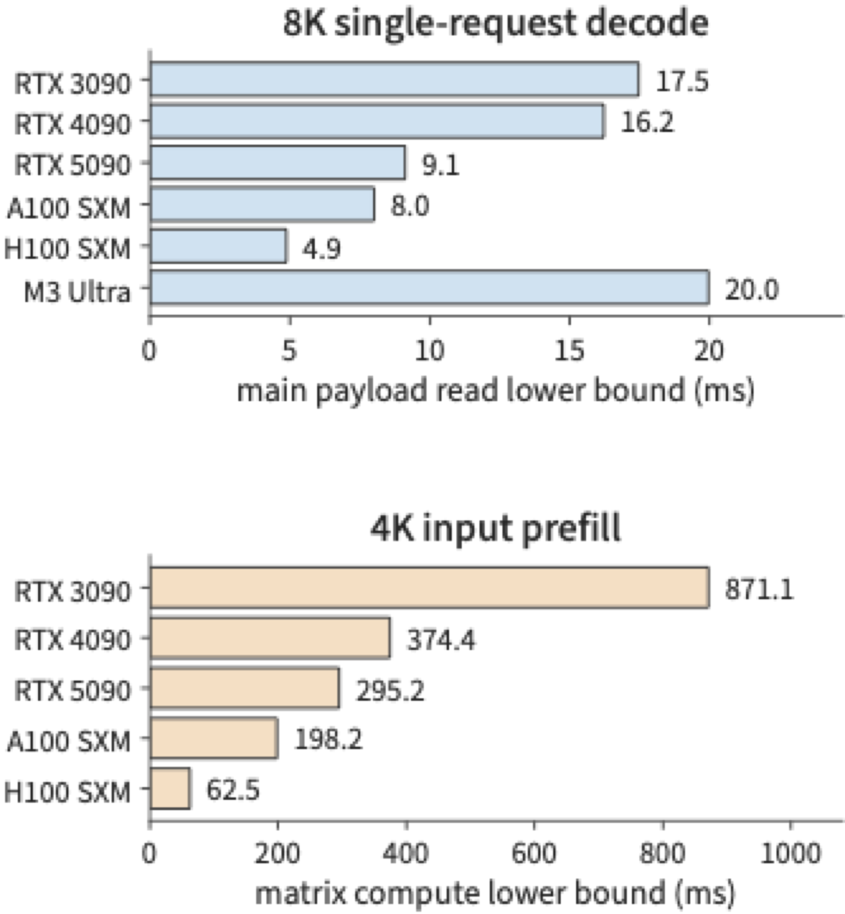
These results support several direct conclusions. Moving from the 3090 to the 4090, single-request decode's read lower bound shortens by only about 7.1%, while 4K prefill's matrix time shortens by about 57.0%. Moving from A100 to H100, read time shortens by about 39.1% and matrix time by about 68.5%; moving further to H200, read time continues to drop while matrix time stays essentially unchanged. The RTX 5090 and RTX PRO 6000 have the same read time, but the latter has higher matrix throughput and capacity. For document Q&A with longer inputs, the 4090's and H100's matrix gains shorten prefill first; for sustained single-request generation, the 5090's and H200's bandwidth gains directly shorten each step's read time.
How does capacity change which devices are viable? The BF16 Qwen3-8B single-request budget of about 19.737 GB fits within the 24 GB cards in the table; scaling up to eight 8K requests, the total budget of about 28.193 GB exceeds the 3090's/4090's 24 GB, moving into the 5090's 32 GB capacity range.
Running locally, how should one choose between Qwen3-8B and Qwen3-235B-A22B? First compare single-request generation. Qwen3-8B, using BF16 and an 8K context, fits on the RTX 4090, 5090, and M3 Ultra. Converting the table's per-step read time to tokens per second gives read-based upper bounds of about \(1000/16.22\approx61.7\), \(1000/9.12\approx109.6\), and \(1000/19.96\approx50.1\) token/s respectively. This dense 8B model doesn't use the Ultra's extra capacity, and the 5090's higher bandwidth translates directly into a higher generation budget.
Now switch to Section 4.6.3's Qwen3-235B-A22B, using 4-bit weights, single request, and 8K context. This model needs about 126.867 GB of model, KV, and workspace space; the 3090, 4090, and 5090 cannot host it on a single card, but the M3 Ultra's 256 GB and the H200's 141 GB can. Each step reads about 13.697 GB; the M3 Ultra takes about 16.72 ms and the H200 about 2.85 ms, corresponding to read-based upper bounds of about 59.8 and 350.4 token/s. The Ultra's large memory lets this 235B MoE model run on a single local machine, while the H200's high bandwidth cuts the same step's read time to about a sixth.
Multi-card tensor partitioning and expert dispatch are covered in Chapter 6.
4.8.3 Why Predictions and Measurements Diverge¶
Section 4.8.2's device comparison gave capacity and dominant resource budgets. The runtime library selects specific kernels for math operators, caching changes off-chip traffic, and submission and synchronization also consume time. The purpose of measurement is to identify these execution steps and complete the time model from Section 4.8.1.
First convert Qwen3-8B's read budget into a concrete generation task, on this book's measurement platform, the RTX PRO 6000 Blackwell Workstation. Still using BF16, single request, 8K context, with a per-step payload of 16.345 GB, at the peak bandwidth of 1,792 GB/s the read takes 9.12 ms, corresponding to about 109.6 token/s; taking 128 decode steps near this context length, the total is about 1.17 s.
Chapter 8's Experiment 8-1 ran this exact condition on the same card using vLLM: 8K context, batch 1, with a median pure-decode iteration time of 25.83 ms across three runs. The three runs were 26.43, 16.18, and 25.83 ms, with one clearly faster and the other two differing by less than 3%; taking the median avoids letting a single outlier skew the comparison below.33 The generation speed is about 38.7 token/s, and 128 steps take about 3.31 s; the read lower bound accounts for only 35.3% of the measured time, with the measured time exceeding the lower bound by about 16.7 ms.
The extra time does not come from read speed: in the same experiment, the 2K context reads 0.906 GB less KV per step, which at peak bandwidth should save about 0.51 ms, yet the measured run is 26.26 ms — not shorter than 8K's 25.83 ms. When batch increases to 64, the 2K condition's per-step read increases to 34.46 GB, with a read lower bound of 19.23 ms, while the measured run increases only to 29.63 ms, an effective bandwidth of about 1.16 TB/s, or 65% of peak. This shows that at batch 1, per-step time is dominated by a fixed chunk of work unrelated to read volume: the experiment runs in eager mode, with kernels launched one at a time, plus vector operations, sampling, and synchronization. On this software/hardware stack, improving bandwidth utilization can barely speed up single-request generation; to shorten per-step time, you must first reduce this fixed work — the kernel fusion and launch-count reduction discussed in Chapter 5 target exactly this time. As batch size grows, the fixed work is amortized over more tokens, and reads become the dominant term again.
By the definition in Section 1.2.2, 35.3% and 65% are the MBU under these two conditions. Both kinds of gap mentioned in Section 1.3.4 are visible here. The counter records below will show that the model's logical read requests do not equal DRAM traffic — the portion that hits cache does not consume GPU memory bandwidth — and correcting this is a matter of model accounting; the gaps left by launching kernels one at a time, and by host submission and synchronization, are implementation overhead that can be eliminated. Model accounting must be corrected first, and then the overhead removed; neither step can be skipped.
To break down the extra time into concrete steps requires timing, traffic, and kernel records. Below, we use this book's existing Q projection measurements to show how to find the source of the time gap from these records.
The companion experiment runs the same \(K=N=4096\) projection on the M2 Max and the RTX PRO 6000 Blackwell Workstation, with input, weights, and output all in BF16. To compare different weight-access patterns, 16 copies of identical-content, different-address 32 MiB weights are prepared on each platform. The reuse group always uses the same address; the rotation group cycles through different addresses in turn. Each round performs 16 calls, recording the whole round's time including host submission and synchronization, then dividing by 16 to get that round's average time per call. A total of 11 rounds are run, and the median of these 11 averages is taken.27
| Tokens processed this pass \(M\) | M2 Max: reuse/rotation | RTX PRO 6000: reuse/rotation |
|---|---|---|
| \(M=1\) | ~166/183 μs | ~42.9/51.9 μs |
| \(M=256\) | both ~1.835 ms | ~32.6/33.5 μs |
Look first at the RTX single row: rotation is about 21% slower than reuse. One natural explanation is: repeatedly using the same weights keeps them in cache, reducing DRAM reads. This explanation is directly testable: if fewer weight reads is the source of the difference, then when weights are reused, the number of bytes read from off-chip should be smaller. The experiment additionally uses NVIDIA's GPU kernel profiling tool, Nsight Compute, to access weights in the specified manner first, then record a single measured call, aggregating access counts across all kernels.
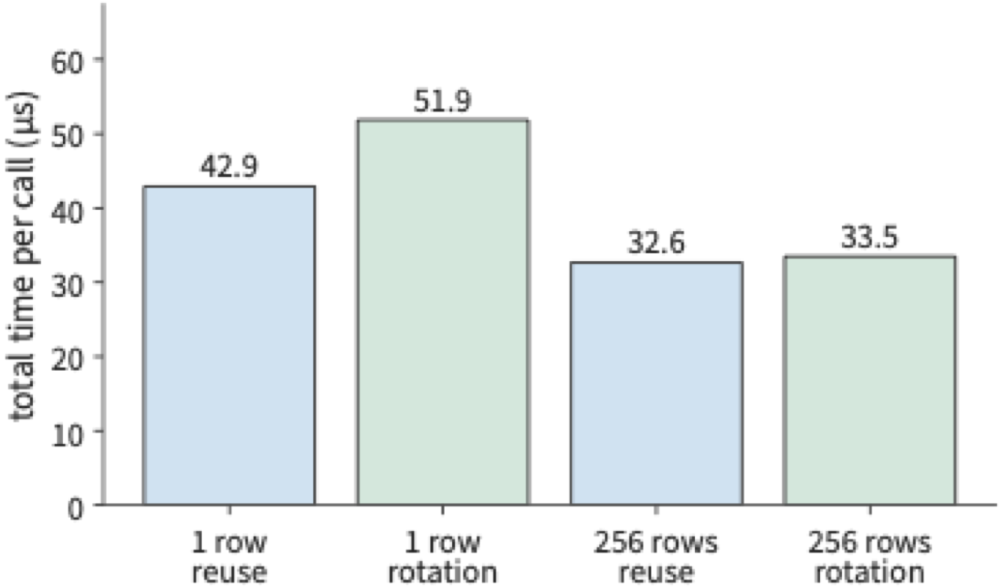
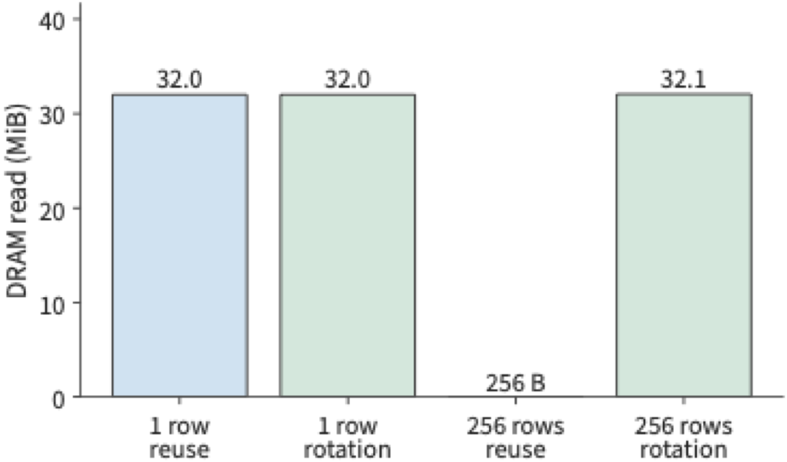
Under both weight-access patterns, the single-row DRAM reads are about 32 MiB, matching the size of a full copy of the weights exactly. Both conditions read the same volume of off-chip weights, so the single-row time difference needs further localization across submission, execution, and waiting. The 256-row case is different: reusing the same weights reads only 256 bytes, while rotating through different weight copies reads about 32.1 MiB, yet the regular timing is about 33 μs in both cases. Caching changes off-chip traffic, but total call time still includes other computation, transfer, and waiting.
The storage hierarchy distinguished in Section 4.3 becomes visible here. Both weight-access patterns for 256 rows show about 147 MiB of L2 requests, far larger than the near-zero DRAM read in that case. A cache hit only means the data is now supplied on-chip — the compute unit's read requests and local transfers still occur. The same weights in the source program, once split into chunks for execution, are repeatedly requested by multiple compute blocks.
On-chip requests explain why data access remains even after DRAM reads drop. Now consider computation. The library splits one projection into more steps: the single-row call uses one GEMV kernel, while the 256-row call uses a GEMM plus a split-K reduction, two kernels. Split-K distributes computation along the inner-product dimension across multiple compute blocks, first forming partial outputs, then merging them with a reduction. This lets more compute blocks run in parallel, but it also requires saving and reading partial results, followed by one final reduction. As a result, what Section 4.1 treats as a single matrix multiplication expands here into multiple stages.
Now estimate, using the RTX PRO 6000's parameters, the execution time when both input and weights are read from off-chip: with BF16 input and FP32 accumulation, the dense matrix operation peak is about 504 TFLOP/s, bandwidth 1.792 TB/s, and the lower bound for the two row counts is about 18.7 and 21.1 μs. The model gives the time needed for matrix compute and off-chip reads, the counters reveal the traffic at each interface level once caching is involved, and the kernel path explains the extra merging work; total time still includes submission, synchronization, and execution gaps.28
To further localize the gap, you can separate "how long it was busy" from "how fast it ran while working." Let \(S_r\) be the time some hardware unit would need to complete all operations at the ideal rate, \(A_r\) the actual time it spends in a working state, and \(T\) the task's total time; then
The first term represents the ratio of actual rate to ideal rate while working; the second represents the fraction of total time spent working. Suppose two tasks each take 100 μs, with an ideal compute time of 40 μs in both cases. In executing the first task, the unit works for only 40 μs, reaching the ideal rate while working, but spends the remaining 60 μs waiting; in executing the second task, the unit works for 80 μs, at only half the ideal rate, with only 20 μs of waiting. Both have the same overall ratio of 40%, yet the optimization direction differs.
The first task calls more for preparing data in advance, arranging more mutually independent computation, or reducing the time spent waiting on the previous step's result — similar to the two-slot-to-three-slot change in Section 4.4; the second task calls more for improving execution granularity, instructions, and local access — similar to the analysis of padding waste and grouped calls in Section 4.2.7
Experiment 4-6 · Extension: Using Mac and RTX measurements to check execution-time predictions
Based on the projection's measured total time on the two platforms, propose two possible causes of the time difference, then use DRAM, L2, and kernel records to list, for each cause, the expected and actual observations. Then diagram the matrix, partial-result, and reduction paths for the 256-row call, and identify which stage-level timings are needed to separate the compute unit's execution efficiency while working from its waiting time. Compare the results against a model that assumes both input and weights are read entirely from off-chip.
4.8.4 Choosing Among Capacity, Speed, Power, and Cost¶
Section 4.8.3 obtained task completion time; this section converts it into cost and energy consumption. First compare pay-per-usage-time schemes, then fold in idle time and the fixed investment of specialized architectures.
Let \(c_A,c_B\) be the hourly cost of two machines, and \(t_A,t_B\) the running time to complete the same task. When billed by running time, the per-task cost is proportional to \(ct\), so
The right-hand side gives how much the hourly costs may differ: if A is twice as fast as B, A remains cheaper per task as long as A's hourly cost is less than twice B's. Replacing hourly cost with average power, the same inequality compares per-task energy consumption instead. In Section 4.8.3's reuse group, the Mac/RTX time ratios were about 3.9 (single row) and 56 (256 rows). Counting only the graphics card on the RTX side, and using the RTX PRO 6000 Workstation's 600 W power cap, one single-row call consumes at most about 25.8 mJ, and one 256-row call about 19.6 mJ. Apple's official specifications do not give the whole machine's power for the M2 Max; working backward from the inequality above, the Mac's average power during a single-row call would need to be below about 155 W for it to consume less energy per call than the RTX, and below about 10.7 W for the 256-row case. With the machine unchanged and only the matrix size varying, the power the Mac is allowed to draw while retaining its energy advantage drops from about 155 W to about 10.7 W.28
Long-running services must also account for the cost of idle periods. Suppose a machine processing requests generates \(q\) effective tokens per second, and the fraction of each hour spent processing requests is \(u\); then hourly output is \(3600uq\), and the cost per token is \(c/(3600uq)\). If generation speed doubles while utilization halves, hourly output is unchanged, and so is the unit cost.
Energy consumption is likewise determined jointly by power and time. Take Section 4.8.2's single-request 8K decode as an example: suppose both cards run at their power cap, with per-step time equal to the read lower bound. The RTX 4090 draws 450 W over 16.22 ms, for about 7.30 J per step; the RTX 5090 draws 575 W over 9.12 ms, for about 5.24 J per step.30 Power increases by about 28%, yet per-step energy actually decreases by about 28%. The general form is
For long-running services, tallying total power consumption over a period and dividing by that period's effective output accounts for the power drawn during idle and warmup periods as well. Shortening running time reduces energy consumed while executing tasks, while raising utilization reduces the idle-power share amortized over each task. Section 4.1.3's energy accounting gave an order-of-magnitude estimate for one decode step's energy: for a single request with an 8K context, 0.534 J per token, of which 0.481 J goes to reading weights; at batch 32, per-token energy drops to about 0.068 J. This accounting excludes control, clocking, static leakage, and idle-period power, so dividing total power consumption by effective output would yield a higher per-token energy figure than this estimate.52
Specialization carries a separate fixed investment. Let \(F_0\) be the fixed cost added relative to a general-purpose scheme, and \(\Delta c\) the variable-cost saving per effective output unit; the break-even volume is
Models get updated or replaced, so a specialized system has only a limited window of use for that model. Suppose there are \(D\) machines, each processing requests at generation rate \(q\) and utilization \(u\), and the model's usable lifetime is \(L\); total output is \(DuqL\). Only once the running-cost savings over this period reach the fixed investment does the specialized scheme break even.
Example 4-3: Can specialization break even within the model's lifetime?
The incremental fixed cost is 20 million, saving 0.50 per million qualifying output tokens. Deploying 100 machines, each processing requests at 10,000 token/s, with 50% utilization, and a one-year model economic lifetime, calculated at 365 days per year.
Compare the output volume needed to break even against the output achievable in one year. The break-even volume is \(20\,000\,000/(0.50/10^6)=4\times10^{13}\) tokens, i.e., 40 trillion. One year's output is \(100\times10\,000\times0.5\times31\,536\,000\approx1.58\times10^{13}\) tokens, i.e., about 15.8 trillion.
What actual service scale is needed to break even within one year? One year's output is about 39% of the break-even volume. With per-machine rate and utilization held constant, at least 254 machines would need to run for a year.
Break-even scale after halving the model lifetime or lowering utilization. If the model is replaced every six months, each machine's usable time is halved, requiring at least 508 machines to maintain the given utilization; the result is the same if utilization drops from 50% to 25%.
This example saves about 7.88 million per year, below the 20 million fixed investment; reaching the break-even volume of 40 trillion tokens takes about 2.54 years, exceeding the one-year model lifetime given in the premise.24
Experiment 4-7 · Extension: Does a chip-resource change still pay off after the workload changes?
Choose an architecture and a representative workload, and propose one resource change. First derive the time change from workload, traffic, and dependencies, then compute the added capacity and reduced waiting. Then vary batch size or context length, and find the critical value at which the original change no longer saves time. If the scheme requires additional fixed investment, then compute, from the cost saved per task, the accelerator utilization, and the model lifetime, the minimum service volume needed to recoup the fixed investment.
Experiment 4-8 · Extension: From energy accounting to power capping
Using Section 4.1.3's energy table and the per-step read byte count for Qwen3-8B single-request 8K decode. (a) Take batch sizes of 8, 32, and 128 respectively, compute the per-token weight, KV, and compute energy for each, and find the minimum batch size at which the weight term drops below the compute term. (b) Change the context to 32K, find the batch size at which the KV term equals the weight term, and explain why further increasing batch size beyond this point no longer noticeably lowers per-token energy. (c) Choose a card's TDP, peak compute, and HBM bandwidth, and compute the energy budget per FLOP \(b\) at peak rate; assuming the actual energy per FLOP is \(1.5b\), and using \(P\propto fV^2\), compute the sustainable frequency ratio under both a fixed-voltage case and a case where voltage drops with frequency; then divide the energy of one step at batch 32 from (a) (32 times the per-token energy) by the step time at the sustainable frequency to obtain the average power, and compare it against the TDP.
Chapter Summary¶
Accelerator analysis starts from the model workload: state size filters capacity, traffic and bandwidth compute read time, matrix shape, precision, and instruction rate compute compute time, and execution is then scheduled along dependencies. The evolution of the three architectures shows that model demands reshape resource ratios. Access counts, kernel records, and timing translate these budgets into runtime speed and task cost. Time and energy are two separate ledgers: bandwidth determines how fast a step runs, energy per byte and reuse count determine how many joules a step consumes, and the power ceiling in turn suppresses the sustainable frequency. Chapter 5 continues by examining layout, fusion, and scheduling, showing how software makes good use of these hardware resources.
-
Qwen3-8B's fixed configuration, tensor indexing, and model implementation are given in the model configuration and projection calculation results. ↩
-
Jouppi et al., In-Datacenter Performance Analysis of a Tensor Processing Unit, ISCA 2017, archived paper. ↩↩
-
A100 architecture whitepaper, H100 architecture whitepaper, Hopper Tuning Guide, Blackwell technical brief, and CUTLASS Blackwell features. ↩↩
-
Ascend 950 official architecture whitepaper, §4.1—4.1.6; page-level positioning of the earlier DaVinci and CANN separated architecture is in the comparison notes. ↩↩
-
From operator utilization to waiting during execution and paper reading notes. ↩↩
-
M2 Pro/Max official specifications, Apple GPU architecture description, Metal storage modes, M5 GPU Neural Accelerator official description. ↩↩↩↩↩
-
FlashAttention-4, MLSys 2026, paper, §2.2, §3.1.1, Equations 1–3, and Table 1; single-SM independent recomputation. ↩↩↩
-
Hardware precision audit, DeepSeek V4-Flash and Qwen stage-by-stage resource conditions, low-precision and execution-path research. For hardware evolution and cost attribution, see the cost decline study. ↩
-
Experiment 4-2, real routing activations, 128-element grouping, single-expert in-model substitution. ↩
-
Qwen3-8B configuration; full results for storage generations. ↩
-
Storage-generation comparison results and computation notes. ↩↩↩
-
Mess, MICRO 2024, author-accepted manuscript, selected physical pages 3–6; memory-bandwidth concurrency example and constraints. ↩↩
-
DeepSeek V4-Flash shared-expert movement coordinate results and source-level counting notes. ↩
-
Hopper Tuning Guide, Ascend 950 whitepaper, Rubin official architecture description. ↩↩
-
Qwen attention-input pipeline baseline, matrix-rate doubling, modeling and independent check. ↩
-
Blackwell technical brief, 10 TB/s NV-HBI; CloudMatrix384 v2, §3.3.1 (910C, 64 GB per die, 1.6 TB/s, 270 GB/s per direction between dies), the start of §4.2 (one expert per die during decode) and §4.2.2; die-locality computations for the two products appear in the
die_localityentry of the teaching derivation script; Vera Rubin platform, UB and Ascend cross-check. ↩↩↩ -
Inside the Eighth-Generation TPU: An Architecture Deep Dive. ↩
-
Groq TSP paper, IPU Programming Model, Cerebras WSE-3 datasheet, SambaNova SN40L paper. ↩↩↩
-
Modeling notes on lower bounds for per-stage latency; for the actual operator range of a real model, see the Qwen3-8B prefill128 resource results. ↩
-
Hardware sources and precision audit and the official baseline table. ↩
-
Experiment 4-6, full notes and raw records, projected timing summary, actual DRAM/L2 counts. ↩
-
Paired projected cost and average-power conditions; the RTX PRO 6000's 600 W is taken from the hardware input table, and the per-call energy at parity with the Mac's power is computed by the
energyentry of the teaching derivation script; see the derivation data. ↩↩ -
For terminology on the host, DMA, and unified addressing, see the CUDA Programming Guide. ↩
-
RTX Blackwell architecture whitepaper, Appendix A, Table 3: the RTX 4090 has 24 GB GDDR6X, 1,008 GB/s, PCIe Gen 4, and a 450 W TGP; the RTX 5090 has 32 GB GDDR7, 1,792 GB/s, PCIe Gen 5, and a 575 W TGP; A100 80GB datasheet, PCIe 4.0 at 64 GB/s (bidirectional aggregate). H2D and GPU-memory read times appear in the
host_linkentry of the teaching derivation script. ↩↩ -
RTX 4090, 128 in-flight transactions, RTX 4090, 4,096, RTX 5090, 4,096, RTX 5090, 800 ns latency; for H100 latency, see Mess's Table I and Figure 3(h). ↩
-
Experiment 7-3, public run-record verification, raw log from two HGX H100 nodes: 16 ranks, NCCL 2.26.2, 16-byte AllReduce out-of-place 24.96 μs, in-place 24.93 μs. ↩
-
Experiment 8-1 batch sweep and its row-by-row efficiency summary: RTX PRO 6000 Blackwell Workstation, Qwen3-8B BF16, vLLM 0.23.0, eager mode; each row takes the median of the pure decode iteration per round, then the median across three rounds. The ratio to the read lower bound is computed by the
measured_decodeentry of the teaching derivation script. ↩ -
The three-slot pipeline, the compute-doubling variant, and the design turning point are generated by the teaching derivation script; the full timeline appears in the derivation data. ↩↩
-
The author's measurements on an RTX PRO 6000 Blackwell Workstation (GB202, 188 SMs, 128 MiB L2, SM clock measured at 2.88 GHz); see the measurement notes and methodology checks and the excerpt of the values cited in this book. The benchmarks are in
tools/gpu_microbench/of the OpenTallas repository, CUDA 12.8. Another workload shared the GPU during the runs; the text uses the minimum across runs, and medians are 10%–40% higher. ↩↩ -
DeepSeek V3 technical report, §3.5, Suggestions on Hardware Design. ↩
-
Item-by-item recomputation for this chapter's condition comparisons, and the computation program. ↩
-
DeepSeek V4.1 official technical report, §1, 2, 3, and 6; fixed conditions and recomputation across chapters for this running session. ↩
-
Turing official architecture whitepaper, Turing Tensor Cores and low-precision inference. ↩
-
Volta architecture whitepaper, Tensor Cores and mixed-precision chapter. ↩↩
-
Blackwell Tuning Guide, CUTLASS Blackwell feature notes, and the SM100 TMEM example; the 128 KB L1 data cache and 100 KB shared-memory cap per SM on SM120 (compute capability 12.0) appear in the CUDA Programming Guide's compute-capability table. ↩↩
-
NVIDIA Rubin GPU architecture description, MoE data movement, K-dimension instruction throughput, and attention acceleration. ↩
-
Apple M3 official architecture introduction, M4 official release notes, and M4 Mac mini specifications. ↩
-
DaVinci architecture paper, §3.1–3.4; Ascend C Guide, Chapter 4 on coupled versus separated architectures; CloudMatrix384 v2, §3.3.1, §4.2.2. ↩↩↩
-
Quantitative computation program and notes for architecture evolution, item-by-item computed results. Parameters are taken from the hardware input table; the 3090 is supplemented from Table 9 of the official GA102 whitepaper; the full model configurations and tensor inventory follow this book's calculations. ↩↩↩
-
A100 architecture whitepaper, chapter on BF16 and numerical formats; recomputation of numerical range, storage, and quantization. ↩
-
The author's "Where Should Network Intelligence Live", a retrospective on the 2016 ResNet design background from a 2023 talk; the DaVinci architecture paper §3.2, §3.4, Table 5, and the Ascend 910 system give img2col, resource ratio, per-core bandwidth, and 1.2 TB/s HBM respectively. ↩
-
RTX PRO 6000 product specifications, ECC, MIG, and product configuration; Hopper Tuning Guide, NVLink; GA102 whitepaper, 3090 NVLink; Blackwell Tuning Guide and CUTLASS Blackwell features, SM100/SM120. ↩↩↩
-
Apple official configuration cross-check, GPU and capacity combinations, and the hardware table. The M3 Ultra's 512 GB is cross-confirmed by the official release notes and recorded 80-core GPU full-system test configurations. The M5 Ultra's 512 GB/1,200 GB/s is a specification announced in August 2026; the 512 GB configuration is scheduled to ship in late October 2026. ↩
-
He Tingbo, Huawei's τ Chip Was Supposed to Melt?, ChinaXiv:202609.00031v1, 2026-09-04, archived paper, §II–V and Figures 1–2: dynamic-power share, wiring capacitance, an NPU comparison at equal performance (29 TOPS, 0.85→0.55 V, a 63% frequency drop, a 66% power drop), a 25% drop in DSP power, and a projected 40% area reduction. ↩
-
Dally, Hardware for Deep Learning, Hot Chips 2023 keynote, pages 12, 51–52: page 12 gives HFMA at 1.5 pJ, HMMA at 110 pJ, instruction overhead of about 30 pJ, and an overhead share of 2000%/22% (45 nm); page 51's energy table notes it is taken from Horowitz, ISSCC 2014, at a 45 nm process; page 52 gives the three-level memory figures of 5/50/640 pJ per 32-bit word, with no process node noted; Fine-Grained DRAM, MICRO 2017, §1–2, HBM2 at 3.97 pJ/bit with its breakdown, DRAM energy modeled at 28 nm; NVIDIA Grace Hopper Superchip Architecture In-Depth, 2022-11-10, NVLink-C2C at 1.3 pJ/bit. ↩↩
-
Energy ledger results, read from the byte counts and FLOPs of the single-request 8K decode result, summed using the per-byte and per-FLOP energy figures from the table above; run
python3 calculations/calc.py energy-ledger --format mdto recompute. ↩↩ -
H100 architecture whitepaper, Table 4: five HBM3 stacks, a 5120-bit interface, 2619 MHz DDR, 3352 GB/s (this chapter's main text uses the rounded 3.35 TB/s, i.e., 3,350 GB/s, from the datasheet), 814 mm², TSMC 4N process, with the A100 at 826 mm²; Blackwell technical brief, page 7, two reticle-limit dies and 10 TB/s NV-HBI, Table 3's B200 at 192 GB/7.7 TB/s; HGX platform component description, Table 1, HGX B200 at 180 GB per GPU and up to 8 TB/s; H200 datasheet, 141 GB/4.8 TB/s; Micron HBM3E product page, 1024 pins, eight-high 24 GB, twelve-high 36 GB; SK hynix HBM product page, 9.6 Gbit/s and 1.23 TB/s. ↩
-
H100 datasheet, SXM maximum thermal design power of 700 W; H100 architecture whitepaper, Table 4, BF16 dense 989.4 TFLOPS with a TDP of 700 W; Blackwell technical brief, Table 3, B200 at 1000 W. ↩